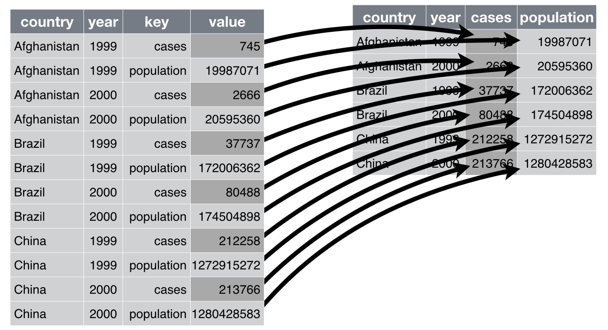

<!DOCTYPE html>
<html lang="es" xml:lang="es">
<head>

  <meta charset="utf-8" />
  <meta http-equiv="X-UA-Compatible" content="IE=edge" />
  <title>Capítulo 2 Base de datos | Ciencia de Datos</title>
  <meta name="description" content="BCRA" />
  <meta name="generator" content="bookdown 0.29 and GitBook 2.6.7" />

  <meta property="og:title" content="Capítulo 2 Base de datos | Ciencia de Datos" />
  <meta property="og:type" content="book" />
  
  <meta property="og:description" content="BCRA" />
  <meta name="github-repo" content="msangia/msangia.github" />

  <meta name="twitter:card" content="summary" />
  <meta name="twitter:title" content="Capítulo 2 Base de datos | Ciencia de Datos" />
  <meta name="twitter:site" content="@msangia" />
  <meta name="twitter:description" content="BCRA" />
  

<meta name="author" content="Máximo Sangiácomo" />


  <meta name="viewport" content="width=device-width, initial-scale=1" />
  <meta name="apple-mobile-web-app-capable" content="yes" />
  <meta name="apple-mobile-web-app-status-bar-style" content="black" />
  
  
<link rel="prev" href="intro.html"/>
<link rel="next" href="conceptos.html"/>
<script src="libs/jquery-3.6.0/jquery-3.6.0.min.js"></script>
<script src="https://cdn.jsdelivr.net/npm/fuse.js@6.4.6/dist/fuse.min.js"></script>
<link href="libs/gitbook-2.6.7/css/style.css" rel="stylesheet" />
<link href="libs/gitbook-2.6.7/css/plugin-table.css" rel="stylesheet" />
<link href="libs/gitbook-2.6.7/css/plugin-bookdown.css" rel="stylesheet" />
<link href="libs/gitbook-2.6.7/css/plugin-highlight.css" rel="stylesheet" />
<link href="libs/gitbook-2.6.7/css/plugin-search.css" rel="stylesheet" />
<link href="libs/gitbook-2.6.7/css/plugin-fontsettings.css" rel="stylesheet" />
<link href="libs/gitbook-2.6.7/css/plugin-clipboard.css" rel="stylesheet" />


<link href="libs/anchor-sections-1.1.0/anchor-sections.css" rel="stylesheet" />
<link href="libs/anchor-sections-1.1.0/anchor-sections-hash.css" rel="stylesheet" />
<script src="libs/anchor-sections-1.1.0/anchor-sections.js"></script>
<html>
  <head>
	<link rel="shortcut icon" href="images/favicon.png" />
  </head>
  <body>
  </body>
</html>


<style type="text/css">
pre > code.sourceCode { white-space: pre; position: relative; }
pre > code.sourceCode > span { display: inline-block; line-height: 1.25; }
pre > code.sourceCode > span:empty { height: 1.2em; }
.sourceCode { overflow: visible; }
code.sourceCode > span { color: inherit; text-decoration: inherit; }
pre.sourceCode { margin: 0; }
@media screen {
div.sourceCode { overflow: auto; }
}
@media print {
pre > code.sourceCode { white-space: pre-wrap; }
pre > code.sourceCode > span { text-indent: -5em; padding-left: 5em; }
}
pre.numberSource code
  { counter-reset: source-line 0; }
pre.numberSource code > span
  { position: relative; left: -4em; counter-increment: source-line; }
pre.numberSource code > span > a:first-child::before
  { content: counter(source-line);
    position: relative; left: -1em; text-align: right; vertical-align: baseline;
    border: none; display: inline-block;
    -webkit-touch-callout: none; -webkit-user-select: none;
    -khtml-user-select: none; -moz-user-select: none;
    -ms-user-select: none; user-select: none;
    padding: 0 4px; width: 4em;
    color: #aaaaaa;
  }
pre.numberSource { margin-left: 3em; border-left: 1px solid #aaaaaa;  padding-left: 4px; }
div.sourceCode
  {   }
@media screen {
pre > code.sourceCode > span > a:first-child::before { text-decoration: underline; }
}
code span.al { color: #ff0000; font-weight: bold; } /* Alert */
code span.an { color: #60a0b0; font-weight: bold; font-style: italic; } /* Annotation */
code span.at { color: #7d9029; } /* Attribute */
code span.bn { color: #40a070; } /* BaseN */
code span.bu { } /* BuiltIn */
code span.cf { color: #007020; font-weight: bold; } /* ControlFlow */
code span.ch { color: #4070a0; } /* Char */
code span.cn { color: #880000; } /* Constant */
code span.co { color: #60a0b0; font-style: italic; } /* Comment */
code span.cv { color: #60a0b0; font-weight: bold; font-style: italic; } /* CommentVar */
code span.do { color: #ba2121; font-style: italic; } /* Documentation */
code span.dt { color: #902000; } /* DataType */
code span.dv { color: #40a070; } /* DecVal */
code span.er { color: #ff0000; font-weight: bold; } /* Error */
code span.ex { } /* Extension */
code span.fl { color: #40a070; } /* Float */
code span.fu { color: #06287e; } /* Function */
code span.im { } /* Import */
code span.in { color: #60a0b0; font-weight: bold; font-style: italic; } /* Information */
code span.kw { color: #007020; font-weight: bold; } /* Keyword */
code span.op { color: #666666; } /* Operator */
code span.ot { color: #007020; } /* Other */
code span.pp { color: #bc7a00; } /* Preprocessor */
code span.sc { color: #4070a0; } /* SpecialChar */
code span.ss { color: #bb6688; } /* SpecialString */
code span.st { color: #4070a0; } /* String */
code span.va { color: #19177c; } /* Variable */
code span.vs { color: #4070a0; } /* VerbatimString */
code span.wa { color: #60a0b0; font-weight: bold; font-style: italic; } /* Warning */
</style>

<style type="text/css">
/* Used with Pandoc 2.11+ new --citeproc when CSL is used */
div.csl-bib-body { }
div.csl-entry {
  clear: both;
}
.hanging div.csl-entry {
  margin-left:2em;
  text-indent:-2em;
}
div.csl-left-margin {
  min-width:2em;
  float:left;
}
div.csl-right-inline {
  margin-left:2em;
  padding-left:1em;
}
div.csl-indent {
  margin-left: 2em;
}
</style>

<link rel="stylesheet" href="css/style.css" type="text/css" />
<link rel="stylesheet" href="css/r4ds.css" type="text/css" />
</head>

<body>


  <div class="book without-animation with-summary font-size-2 font-family-1" data-basepath=".">

    <div class="book-summary">
      <nav role="navigation">

<ul class="summary">
<li><a href="./">Ciencia de Datos - BCRA</a></li>

<li class="divider"></li>
<li class="chapter" data-level="" data-path="index.html"><a href="index.html"><i class="fa fa-check"></i>Descripcion del curso</a></li>
<li class="chapter" data-level="1" data-path="intro.html"><a href="intro.html"><i class="fa fa-check"></i><b>1</b> Introduccion a R</a>
<ul>
<li class="chapter" data-level="1.1" data-path="intro.html"><a href="intro.html#primeros-pasos"><i class="fa fa-check"></i><b>1.1</b> Primeros pasos</a></li>
<li class="chapter" data-level="1.2" data-path="intro.html"><a href="intro.html#busacar-ayuda"><i class="fa fa-check"></i><b>1.2</b> Busacar ayuda</a></li>
<li class="chapter" data-level="1.3" data-path="intro.html"><a href="intro.html#tipos-de-datos"><i class="fa fa-check"></i><b>1.3</b> Tipos de datos</a></li>
<li class="chapter" data-level="1.4" data-path="intro.html"><a href="intro.html#limpieza-de-memoria"><i class="fa fa-check"></i><b>1.4</b> Limpieza de memoria</a></li>
<li class="chapter" data-level="1.5" data-path="intro.html"><a href="intro.html#asignación-de-valores"><i class="fa fa-check"></i><b>1.5</b> Asignación de valores</a></li>
<li class="chapter" data-level="1.6" data-path="intro.html"><a href="intro.html#operadores-aritméticos"><i class="fa fa-check"></i><b>1.6</b> Operadores aritméticos</a></li>
<li class="chapter" data-level="1.7" data-path="intro.html"><a href="intro.html#operadores-relacionales"><i class="fa fa-check"></i><b>1.7</b> Operadores relacionales</a></li>
<li class="chapter" data-level="1.8" data-path="intro.html"><a href="intro.html#operadores-lógicos"><i class="fa fa-check"></i><b>1.8</b> Operadores lógicos</a></li>
<li class="chapter" data-level="1.9" data-path="intro.html"><a href="intro.html#vectores"><i class="fa fa-check"></i><b>1.9</b> Vectores</a></li>
<li class="chapter" data-level="1.10" data-path="intro.html"><a href="intro.html#secuencias"><i class="fa fa-check"></i><b>1.10</b> Secuencias</a></li>
<li class="chapter" data-level="1.11" data-path="intro.html"><a href="intro.html#factores"><i class="fa fa-check"></i><b>1.11</b> Factores</a></li>
<li class="chapter" data-level="1.12" data-path="intro.html"><a href="intro.html#matrices"><i class="fa fa-check"></i><b>1.12</b> Matrices</a></li>
<li class="chapter" data-level="1.13" data-path="intro.html"><a href="intro.html#listas"><i class="fa fa-check"></i><b>1.13</b> Listas</a></li>
<li class="chapter" data-level="1.14" data-path="intro.html"><a href="intro.html#data-frames"><i class="fa fa-check"></i><b>1.14</b> Data frames</a></li>
<li class="chapter" data-level="1.15" data-path="intro.html"><a href="intro.html#r-base"><i class="fa fa-check"></i><b>1.15</b> R base</a></li>
<li class="chapter" data-level="1.16" data-path="intro.html"><a href="intro.html#apply-y-tapply"><i class="fa fa-check"></i><b>1.16</b> Apply y tapply</a></li>
<li class="chapter" data-level="1.17" data-path="intro.html"><a href="intro.html#map"><i class="fa fa-check"></i><b>1.17</b> Map</a></li>
<li class="chapter" data-level="1.18" data-path="intro.html"><a href="intro.html#loops"><i class="fa fa-check"></i><b>1.18</b> Loops</a></li>
<li class="chapter" data-level="1.19" data-path="intro.html"><a href="intro.html#condicionales"><i class="fa fa-check"></i><b>1.19</b> Condicionales</a></li>
<li class="chapter" data-level="1.20" data-path="intro.html"><a href="intro.html#funciones"><i class="fa fa-check"></i><b>1.20</b> Funciones</a>
<ul>
<li class="chapter" data-level="1.20.1" data-path="intro.html"><a href="intro.html#output-más-de-un-resultado"><i class="fa fa-check"></i><b>1.20.1</b> Output más de un resultado</a></li>
<li class="chapter" data-level="1.20.2" data-path="intro.html"><a href="intro.html#argumentos-con-valores-default"><i class="fa fa-check"></i><b>1.20.2</b> Argumentos con valores default</a></li>
</ul></li>
</ul></li>
<li class="chapter" data-level="2" data-path="bd.html"><a href="bd.html"><i class="fa fa-check"></i><b>2</b> Base de datos</a>
<ul>
<li class="chapter" data-level="2.1" data-path="bd.html"><a href="bd.html#directorio-de-trabajo"><i class="fa fa-check"></i><b>2.1</b> Directorio de trabajo</a></li>
<li class="chapter" data-level="2.2" data-path="bd.html"><a href="bd.html#cargar-datos"><i class="fa fa-check"></i><b>2.2</b> Cargar datos</a>
<ul>
<li class="chapter" data-level="2.2.1" data-path="bd.html"><a href="bd.html#ingrasar-datos-con-tidyverse"><i class="fa fa-check"></i><b>2.2.1</b> Ingrasar datos con <code>tidyverse</code></a></li>
<li class="chapter" data-level="2.2.2" data-path="bd.html"><a href="bd.html#bases-de-stata"><i class="fa fa-check"></i><b>2.2.2</b> Bases de Stata</a></li>
</ul></li>
<li class="chapter" data-level="2.3" data-path="bd.html"><a href="bd.html#problemas-de-imputación"><i class="fa fa-check"></i><b>2.3</b> Problemas de imputación</a></li>
<li class="chapter" data-level="2.4" data-path="bd.html"><a href="bd.html#exportar-datos"><i class="fa fa-check"></i><b>2.4</b> Exportar datos</a></li>
<li class="chapter" data-level="2.5" data-path="bd.html"><a href="bd.html#pipe"><i class="fa fa-check"></i><b>2.5</b> Pipe</a></li>
<li class="chapter" data-level="2.6" data-path="bd.html"><a href="bd.html#variables"><i class="fa fa-check"></i><b>2.6</b> Variables</a></li>
<li class="chapter" data-level="2.7" data-path="bd.html"><a href="bd.html#merge"><i class="fa fa-check"></i><b>2.7</b> Merge</a></li>
<li class="chapter" data-level="2.8" data-path="bd.html"><a href="bd.html#variables-group_by-mutate"><i class="fa fa-check"></i><b>2.8</b> Variables: group_by, mutate</a></li>
<li class="chapter" data-level="2.9" data-path="bd.html"><a href="bd.html#guardar-datos"><i class="fa fa-check"></i><b>2.9</b> Guardar datos</a></li>
<li class="chapter" data-level="2.10" data-path="bd.html"><a href="bd.html#valores-missing"><i class="fa fa-check"></i><b>2.10</b> Valores missing</a>
<ul>
<li class="chapter" data-level="2.10.1" data-path="bd.html"><a href="bd.html#eliminar-valores-missing"><i class="fa fa-check"></i><b>2.10.1</b> Eliminar valores missing</a></li>
</ul></li>
<li class="chapter" data-level="2.11" data-path="bd.html"><a href="bd.html#loop"><i class="fa fa-check"></i><b>2.11</b> Loop</a></li>
<li class="chapter" data-level="2.12" data-path="bd.html"><a href="bd.html#pivot-reshape"><i class="fa fa-check"></i><b>2.12</b> Pivot (Reshape)</a></li>
<li class="chapter" data-level="2.13" data-path="bd.html"><a href="bd.html#row-bind-append"><i class="fa fa-check"></i><b>2.13</b> Row bind (Append)</a></li>
<li class="chapter" data-level="2.14" data-path="bd.html"><a href="bd.html#strings"><i class="fa fa-check"></i><b>2.14</b> Strings</a></li>
<li class="chapter" data-level="2.15" data-path="bd.html"><a href="bd.html#fechas"><i class="fa fa-check"></i><b>2.15</b> Fechas</a>
<ul>
<li class="chapter" data-level="2.15.1" data-path="bd.html"><a href="bd.html#manipulación-de-fechas"><i class="fa fa-check"></i><b>2.15.1</b> Manipulación de fechas</a></li>
</ul></li>
<li class="chapter" data-level="2.16" data-path="bd.html"><a href="bd.html#análisis-de-datos"><i class="fa fa-check"></i><b>2.16</b> Análisis de datos</a>
<ul>
<li class="chapter" data-level="2.16.1" data-path="bd.html"><a href="bd.html#tablas"><i class="fa fa-check"></i><b>2.16.1</b> Tablas</a></li>
</ul></li>
<li class="chapter" data-level="2.17" data-path="bd.html"><a href="bd.html#group_by-summarise"><i class="fa fa-check"></i><b>2.17</b> group_by, summarise</a></li>
<li class="chapter" data-level="2.18" data-path="bd.html"><a href="bd.html#vector-de-resultados"><i class="fa fa-check"></i><b>2.18</b> Vector de resultados</a></li>
<li class="chapter" data-level="2.19" data-path="bd.html"><a href="bd.html#gráficos"><i class="fa fa-check"></i><b>2.19</b> Gráficos</a></li>
<li class="chapter" data-level="2.20" data-path="bd.html"><a href="bd.html#ggplot"><i class="fa fa-check"></i><b>2.20</b> GGPlot</a></li>
<li class="chapter" data-level="2.21" data-path="bd.html"><a href="bd.html#guardar-un-gráfico"><i class="fa fa-check"></i><b>2.21</b> Guardar un gráfico</a></li>
</ul></li>
<li class="chapter" data-level="3" data-path="conceptos.html"><a href="conceptos.html"><i class="fa fa-check"></i><b>3</b> Conceptos generales</a>
<ul>
<li class="chapter" data-level="3.1" data-path="conceptos.html"><a href="conceptos.html#estimacion"><i class="fa fa-check"></i><b>3.1</b> Estimacion</a></li>
<li class="chapter" data-level="3.2" data-path="conceptos.html"><a href="conceptos.html#prediccion"><i class="fa fa-check"></i><b>3.2</b> Prediccion</a></li>
<li class="chapter" data-level="3.3" data-path="conceptos.html"><a href="conceptos.html#inferencia"><i class="fa fa-check"></i><b>3.3</b> Inferencia</a></li>
<li class="chapter" data-level="3.4" data-path="conceptos.html"><a href="conceptos.html#metodos-parametricos"><i class="fa fa-check"></i><b>3.4</b> Metodos parametricos</a></li>
<li class="chapter" data-level="3.5" data-path="conceptos.html"><a href="conceptos.html#metodos-no-parametricos"><i class="fa fa-check"></i><b>3.5</b> Metodos no parametricos</a></li>
<li class="chapter" data-level="3.6" data-path="conceptos.html"><a href="conceptos.html#evaluacion-de-la-precision-del-modelo"><i class="fa fa-check"></i><b>3.6</b> Evaluacion de la precision del modelo</a>
<ul>
<li class="chapter" data-level="3.6.1" data-path="conceptos.html"><a href="conceptos.html#ajuste"><i class="fa fa-check"></i><b>3.6.1</b> Calidad del ajuste</a></li>
<li class="chapter" data-level="3.6.2" data-path="conceptos.html"><a href="conceptos.html#trade-off-sesgo-varianza"><i class="fa fa-check"></i><b>3.6.2</b> Trade-off Sesgo-Varianza</a></li>
<li class="chapter" data-level="3.6.3" data-path="conceptos.html"><a href="conceptos.html#clasificacion"><i class="fa fa-check"></i><b>3.6.3</b> Clasificacion</a></li>
<li class="chapter" data-level="3.6.4" data-path="conceptos.html"><a href="conceptos.html#confusion"><i class="fa fa-check"></i><b>3.6.4</b> Matriz de confusion</a></li>
<li class="chapter" data-level="3.6.5" data-path="conceptos.html"><a href="conceptos.html#roc"><i class="fa fa-check"></i><b>3.6.5</b> Curva ROC</a></li>
</ul></li>
<li class="chapter" data-level="3.7" data-path="conceptos.html"><a href="conceptos.html#resampling-methods"><i class="fa fa-check"></i><b>3.7</b> Resampling Methods</a>
<ul>
<li class="chapter" data-level="3.7.1" data-path="conceptos.html"><a href="conceptos.html#cv"><i class="fa fa-check"></i><b>3.7.1</b> Cross Validation</a></li>
<li class="chapter" data-level="3.7.2" data-path="conceptos.html"><a href="conceptos.html#bootstrap"><i class="fa fa-check"></i><b>3.7.2</b> Bootstrap</a></li>
</ul></li>
<li class="chapter" data-level="3.8" data-path="conceptos.html"><a href="conceptos.html#resumen"><i class="fa fa-check"></i><b>3.8</b> Resumen</a></li>
</ul></li>
<li class="chapter" data-level="4" data-path="mco.html"><a href="mco.html"><i class="fa fa-check"></i><b>4</b> Regresion lineal</a>
<ul>
<li class="chapter" data-level="4.1" data-path="mco.html"><a href="mco.html#relacion-entre-estimacion-optima-y-prediccion-optima"><i class="fa fa-check"></i><b>4.1</b> Relacion entre estimacion optima y prediccion optima</a></li>
<li class="chapter" data-level="4.2" data-path="mco.html"><a href="mco.html#aplicacion-practica"><i class="fa fa-check"></i><b>4.2</b> Aplicacion practica</a></li>
</ul></li>
<li class="chapter" data-level="5" data-path="shrinkage-methods.html"><a href="shrinkage-methods.html"><i class="fa fa-check"></i><b>5</b> Shrinkage Methods</a>
<ul>
<li class="chapter" data-level="5.1" data-path="shrinkage-methods.html"><a href="shrinkage-methods.html#lasso"><i class="fa fa-check"></i><b>5.1</b> LASSO</a></li>
<li class="chapter" data-level="5.2" data-path="shrinkage-methods.html"><a href="shrinkage-methods.html#ridge"><i class="fa fa-check"></i><b>5.2</b> <em>Ridge</em></a></li>
<li class="chapter" data-level="5.3" data-path="shrinkage-methods.html"><a href="shrinkage-methods.html#aplicacion-practica-1"><i class="fa fa-check"></i><b>5.3</b> Aplicacion practica</a></li>
</ul></li>
<li class="chapter" data-level="6" data-path="logit.html"><a href="logit.html"><i class="fa fa-check"></i><b>6</b> Logit</a>
<ul>
<li class="chapter" data-level="6.1" data-path="logit.html"><a href="logit.html#modelo-logit"><i class="fa fa-check"></i><b>6.1</b> Modelo <em>logit</em></a>
<ul>
<li class="chapter" data-level="6.1.1" data-path="logit.html"><a href="logit.html#interpretacion-de-coeficientes-en-el-modelo-logit"><i class="fa fa-check"></i><b>6.1.1</b> Interpretacion de coeficientes en el modelo <em>logit</em></a></li>
</ul></li>
<li class="chapter" data-level="6.2" data-path="logit.html"><a href="logit.html#aplicacion-practica-2"><i class="fa fa-check"></i><b>6.2</b> Aplicacion practica</a></li>
</ul></li>
<li class="chapter" data-level="7" data-path="arboles.html"><a href="arboles.html"><i class="fa fa-check"></i><b>7</b> Arboles de decision</a>
<ul>
<li class="chapter" data-level="7.1" data-path="arboles.html"><a href="arboles.html#classification-and-regression-tree-cart"><i class="fa fa-check"></i><b>7.1</b> <em>Classification and Regression Tree</em> (CART)</a></li>
<li class="chapter" data-level="7.2" data-path="arboles.html"><a href="arboles.html#bagging"><i class="fa fa-check"></i><b>7.2</b> Bagging</a></li>
<li class="chapter" data-level="7.3" data-path="arboles.html"><a href="arboles.html#random-forest"><i class="fa fa-check"></i><b>7.3</b> Random Forest</a></li>
<li class="chapter" data-level="7.4" data-path="arboles.html"><a href="arboles.html#boosting"><i class="fa fa-check"></i><b>7.4</b> Boosting</a>
<ul>
<li class="chapter" data-level="7.4.1" data-path="arboles.html"><a href="arboles.html#ada-boost"><i class="fa fa-check"></i><b>7.4.1</b> Ada Boost</a></li>
</ul></li>
<li class="chapter" data-level="7.5" data-path="arboles.html"><a href="arboles.html#aplicacion-practica-3"><i class="fa fa-check"></i><b>7.5</b> Aplicacion practica</a>
<ul>
<li class="chapter" data-level="7.5.1" data-path="arboles.html"><a href="arboles.html#arboles-de-clasificacion"><i class="fa fa-check"></i><b>7.5.1</b> Arboles de clasificacion</a></li>
<li class="chapter" data-level="7.5.2" data-path="arboles.html"><a href="arboles.html#compara"><i class="fa fa-check"></i><b>7.5.2</b> Comparacion de modelos para clasificacion</a></li>
<li class="chapter" data-level="7.5.3" data-path="arboles.html"><a href="arboles.html#arboles-de-regresion"><i class="fa fa-check"></i><b>7.5.3</b> Arboles de regresion</a></li>
<li class="chapter" data-level="7.5.4" data-path="arboles.html"><a href="arboles.html#bagging-y-random-forests"><i class="fa fa-check"></i><b>7.5.4</b> Bagging y Random Forests</a></li>
<li class="chapter" data-level="7.5.5" data-path="arboles.html"><a href="arboles.html#boosting-1"><i class="fa fa-check"></i><b>7.5.5</b> Boosting</a></li>
</ul></li>
</ul></li>
<li class="chapter" data-level="8" data-path="nnet.html"><a href="nnet.html"><i class="fa fa-check"></i><b>8</b> Neural Networks</a>
<ul>
<li class="chapter" data-level="8.1" data-path="nnet.html"><a href="nnet.html#single-layer-neural-networks"><i class="fa fa-check"></i><b>8.1</b> Single Layer Neural Networks</a></li>
</ul></li>
<li class="chapter" data-level="9" data-path="cluster.html"><a href="cluster.html"><i class="fa fa-check"></i><b>9</b> Analisis de clusters</a>
<ul>
<li class="chapter" data-level="9.1" data-path="cluster.html"><a href="cluster.html#k-means-clustering"><i class="fa fa-check"></i><b>9.1</b> K-Means Clustering</a></li>
<li class="chapter" data-level="9.2" data-path="cluster.html"><a href="cluster.html#aplicacion-practica-4"><i class="fa fa-check"></i><b>9.2</b> Aplicacion practica</a></li>
</ul></li>
<li class="chapter" data-level="" data-path="bibliografia.html"><a href="bibliografia.html"><i class="fa fa-check"></i>Bibliografia</a></li>
<li class="divider"></li>
<li><a href="./" target="blank">Maximo Sangiacomo - GMyP</a></li>

</ul>

      </nav>
    </div>

    <div class="book-body">
      <div class="body-inner">
        <div class="book-header" role="navigation">
          <h1>
            <i class="fa fa-circle-o-notch fa-spin"></i><a href="./">Ciencia de Datos</a>
          </h1>
        </div>

        <div class="page-wrapper" tabindex="-1" role="main">
          <div class="page-inner">

            <section class="normal" id="section-">
<link href="css/style.css" rel="stylesheet">
<div class="hero-image-container"> 
  
</div>
<div id="bd" class="section level1 hasAnchor" number="2">
<h1><span class="header-section-number">Capítulo 2</span> Base de datos<a href="bd.html#bd" class="anchor-section" aria-label="Anchor link to header"></a></h1>
<p>En esta clase nos vamos a centrar en el uso de <code>tidyverse</code>. Además vamos a utilizar funciones de <code>lubridate</code> y <code>zoo</code> que tienen algunas funciones especiales para trabajar con fechas.</p>
<p>En <code>R</code> existen dos tipos de bases de datos <code>data.frame()</code> y <code>tibble()</code> que son las bases de datos de <code>tidyverse</code> el mejor paquete para manipulación y transformación de datos (ver <span class="citation">Wickham y Grolemund (<a href="#ref-R4DS" role="doc-biblioref">2017</a>)</span>). Un <code>data.frame</code> (objeto df) se convierte fácilmente a tibble (y viceversa).</p>
<div class="sourceCode" id="cb261"><pre class="sourceCode r"><code class="sourceCode r"><span id="cb261-1"><a href="bd.html#cb261-1" aria-hidden="true" tabindex="-1"></a><span class="co"># Un data.frame (objeto df) se convierte fácilmente a tibble</span></span>
<span id="cb261-2"><a href="bd.html#cb261-2" aria-hidden="true" tabindex="-1"></a>tib <span class="ot">=</span> <span class="fu">as_tibble</span>(df)</span></code></pre></div>
<p>Las tibbles tienen algunas funciones especiales como poder usar nombres de variables con espacio o números (se deben utilizar <em>back ticks</em>).</p>
<div class="sourceCode" id="cb262"><pre class="sourceCode r"><code class="sourceCode r"><span id="cb262-1"><a href="bd.html#cb262-1" aria-hidden="true" tabindex="-1"></a><span class="fu">library</span>(tidyverse)</span>
<span id="cb262-2"><a href="bd.html#cb262-2" aria-hidden="true" tabindex="-1"></a>tb <span class="ot">&lt;-</span> <span class="fu">tibble</span>(</span>
<span id="cb262-3"><a href="bd.html#cb262-3" aria-hidden="true" tabindex="-1"></a>  <span class="st">`</span><span class="at">Plazo Fijo</span><span class="st">`</span> <span class="ot">=</span> <span class="st">&quot;espacio&quot;</span>, </span>
<span id="cb262-4"><a href="bd.html#cb262-4" aria-hidden="true" tabindex="-1"></a>  <span class="st">`</span><span class="at">2000</span><span class="st">`</span> <span class="ot">=</span> <span class="st">&quot;numero&quot;</span></span>
<span id="cb262-5"><a href="bd.html#cb262-5" aria-hidden="true" tabindex="-1"></a>)</span>
<span id="cb262-6"><a href="bd.html#cb262-6" aria-hidden="true" tabindex="-1"></a>tb</span></code></pre></div>
<pre><code>## # A tibble: 1 × 2
##   `Plazo Fijo` `2000`
##   &lt;chr&gt;        &lt;chr&gt; 
## 1 espacio      numero</code></pre>
<div id="directorio-de-trabajo" class="section level2 hasAnchor" number="2.1">
<h2><span class="header-section-number">2.1</span> Directorio de trabajo<a href="bd.html#directorio-de-trabajo" class="anchor-section" aria-label="Anchor link to header"></a></h2>
<div class="sourceCode" id="cb264"><pre class="sourceCode r"><code class="sourceCode r"><span id="cb264-1"><a href="bd.html#cb264-1" aria-hidden="true" tabindex="-1"></a><span class="co"># Para ver en que directorio estamos trabajando</span></span>
<span id="cb264-2"><a href="bd.html#cb264-2" aria-hidden="true" tabindex="-1"></a><span class="fu">getwd</span>() </span>
<span id="cb264-3"><a href="bd.html#cb264-3" aria-hidden="true" tabindex="-1"></a><span class="co"># Definir directorio. Notar barras invertidas en la ruta</span></span>
<span id="cb264-4"><a href="bd.html#cb264-4" aria-hidden="true" tabindex="-1"></a><span class="fu">setwd</span>(<span class="st">&#39;C:/Documentos/CianciaDatos&#39;</span>) </span></code></pre></div>
</div>
<div id="cargar-datos" class="section level2 hasAnchor" number="2.2">
<h2><span class="header-section-number">2.2</span> Cargar datos<a href="bd.html#cargar-datos" class="anchor-section" aria-label="Anchor link to header"></a></h2>
<div class="infobox tip">
<p>La función <code>fread()</code> del paquete <code>data.table</code> es la más eficiente para grandes volúmenes de datos porque permite paralelizar con <em>multithread</em>.</p>
</div>
<div class="sourceCode" id="cb265"><pre class="sourceCode r"><code class="sourceCode r"><span id="cb265-1"><a href="bd.html#cb265-1" aria-hidden="true" tabindex="-1"></a><span class="co"># CSV</span></span>
<span id="cb265-2"><a href="bd.html#cb265-2" aria-hidden="true" tabindex="-1"></a>bd <span class="ot">=</span> <span class="fu">read.csv</span>(<span class="st">&quot;b_datos.csv&quot;</span>, <span class="at">header=</span><span class="cn">TRUE</span>, <span class="at">stringsAsFactors=</span><span class="cn">TRUE</span>, <span class="at">sep=</span><span class="st">&quot;,&quot;</span>)</span>
<span id="cb265-3"><a href="bd.html#cb265-3" aria-hidden="true" tabindex="-1"></a></span>
<span id="cb265-4"><a href="bd.html#cb265-4" aria-hidden="true" tabindex="-1"></a>bd <span class="ot">=</span> data.table<span class="sc">::</span><span class="fu">fread</span>(<span class="st">&#39;b_datos.txt&#39;</span>, <span class="at">header=</span><span class="cn">TRUE</span>, <span class="at">stringsAsFactors=</span>F, <span class="at">sep=</span><span class="st">&#39;</span><span class="sc">\t</span><span class="st">&#39;</span>, <span class="at">nThread=</span><span class="dv">2</span>)</span>
<span id="cb265-5"><a href="bd.html#cb265-5" aria-hidden="true" tabindex="-1"></a></span>
<span id="cb265-6"><a href="bd.html#cb265-6" aria-hidden="true" tabindex="-1"></a>bd <span class="ot">=</span> <span class="fu">read.delim</span>(<span class="st">&#39;./datos/b_datos.txt&#39;</span>, <span class="at">header=</span><span class="cn">TRUE</span>, <span class="at">stringsAsFactors=</span>F, <span class="at">sep=</span><span class="st">&#39;</span><span class="sc">\t</span><span class="st">&#39;</span>)</span></code></pre></div>
<div class="sourceCode" id="cb266"><pre class="sourceCode r"><code class="sourceCode r"><span id="cb266-1"><a href="bd.html#cb266-1" aria-hidden="true" tabindex="-1"></a><span class="co"># Excel</span></span>
<span id="cb266-2"><a href="bd.html#cb266-2" aria-hidden="true" tabindex="-1"></a><span class="co"># También puede suministrarse la ruta de acceso completa </span></span>
<span id="cb266-3"><a href="bd.html#cb266-3" aria-hidden="true" tabindex="-1"></a>bd <span class="ot">=</span> readxl<span class="sc">::</span><span class="fu">read_excel</span>(<span class="st">&#39;./data/datos_wb.xlsx&#39;</span>, <span class="at">sheet=</span><span class="st">&#39;1&#39;</span>)</span>
<span id="cb266-4"><a href="bd.html#cb266-4" aria-hidden="true" tabindex="-1"></a><span class="fu">str</span>(bd)</span></code></pre></div>
<pre><code>## tibble [60 × 11] (S3: tbl_df/tbl/data.frame)
##  $ year      : num [1:60] 2011 2011 2011 2011 2011 ...
##  $ cname     : chr [1:60] &quot;Argentina&quot; &quot;Brazil&quot; &quot;Chile&quot; &quot;France&quot; ...
##  $ ccode     : chr [1:60] &quot;ARG&quot; &quot;BRA&quot; &quot;CHL&quot; &quot;FRA&quot; ...
##  $ gdp_pc2010: num [1:60] 10883 11628 13456 41369 36228 ...
##  $ gdp_pc2017: num [1:60] 24648 15323 22338 42864 42892 ...
##  $ gdp_2010  : num [1:60] 4.49e+11 2.30e+12 2.32e+11 2.70e+12 2.15e+12 ...
##  $ credit_ps : num [1:60] 14 58.1 101.3 96.8 94.1 ...
##  $ inv       : num [1:60] 17.2 20.6 23.1 22.4 19.7 ...
##  $ exports   : num [1:60] 18.4 11.6 37.8 28.4 26.9 ...
##  $ imports   : num [1:60] 16.8 12.4 34.4 30.4 28.3 ...
##  $ popu      : num [1:60] 4.13e+07 1.98e+08 1.72e+07 6.53e+07 5.94e+07 ...</code></pre>
<table>
<caption><span id="tab:tab">Tabla 2.1: </span>Vista de la base de datos (World Bank)</caption>
<thead>
<tr class="header">
<th align="center">year</th>
<th align="left">cname</th>
<th align="left">ccode</th>
<th align="center">gdp_pc2010</th>
<th align="center">gdp_pc2017</th>
</tr>
</thead>
<tbody>
<tr class="odd">
<td align="center">2,011</td>
<td align="left">Argentina</td>
<td align="left">ARG</td>
<td align="center">10,883</td>
<td align="center">24,648</td>
</tr>
<tr class="even">
<td align="center">2,011</td>
<td align="left">Brazil</td>
<td align="left">BRA</td>
<td align="center">11,628</td>
<td align="center">15,323</td>
</tr>
<tr class="odd">
<td align="center">2,011</td>
<td align="left">Chile</td>
<td align="left">CHL</td>
<td align="center">13,456</td>
<td align="center">22,338</td>
</tr>
<tr class="even">
<td align="center">2,011</td>
<td align="left">France</td>
<td align="left">FRA</td>
<td align="center">41,369</td>
<td align="center">42,864</td>
</tr>
<tr class="odd">
<td align="center">2,011</td>
<td align="left">Italy</td>
<td align="left">ITA</td>
<td align="center">36,228</td>
<td align="center">42,892</td>
</tr>
<tr class="even">
<td align="center">2,011</td>
<td align="left">United Kingdom</td>
<td align="left">GBR</td>
<td align="center">39,729</td>
<td align="center">42,294</td>
</tr>
</tbody>
</table>
<div id="ingrasar-datos-con-tidyverse" class="section level3 hasAnchor" number="2.2.1">
<h3><span class="header-section-number">2.2.1</span> Ingrasar datos con <code>tidyverse</code><a href="bd.html#ingrasar-datos-con-tidyverse" class="anchor-section" aria-label="Anchor link to header"></a></h3>
<table>
<thead>
<tr class="header">
<th align="center">Comando</th>
<th align="center">Separador</th>
</tr>
</thead>
<tbody>
<tr class="odd">
<td align="center"><code>read_csv()</code></td>
<td align="center">coma</td>
</tr>
<tr class="even">
<td align="center"><code>read_csv2()</code></td>
<td align="center">punto y coma</td>
</tr>
<tr class="odd">
<td align="center"><code>read_tsv()</code></td>
<td align="center">tab</td>
</tr>
<tr class="even">
<td align="center"><code>read_delim()</code></td>
<td align="center">otros</td>
</tr>
</tbody>
</table>
</div>
<div id="bases-de-stata" class="section level3 hasAnchor" number="2.2.2">
<h3><span class="header-section-number">2.2.2</span> Bases de Stata<a href="bd.html#bases-de-stata" class="anchor-section" aria-label="Anchor link to header"></a></h3>
<div class="sourceCode" id="cb268"><pre class="sourceCode r"><code class="sourceCode r"><span id="cb268-1"><a href="bd.html#cb268-1" aria-hidden="true" tabindex="-1"></a><span class="fu">library</span>(heaven)</span>
<span id="cb268-2"><a href="bd.html#cb268-2" aria-hidden="true" tabindex="-1"></a><span class="fu">read_dta</span>(...)</span>
<span id="cb268-3"><a href="bd.html#cb268-3" aria-hidden="true" tabindex="-1"></a><span class="fu">write_dta</span>(...)</span></code></pre></div>
</div>
</div>
<div id="problemas-de-imputación" class="section level2 hasAnchor" number="2.3">
<h2><span class="header-section-number">2.3</span> Problemas de imputación<a href="bd.html#problemas-de-imputación" class="anchor-section" aria-label="Anchor link to header"></a></h2>
<p>En esta sección se presentan algunas alternativas para solucionar problemas de imputación de datos, es decir, al cargar el archivo original el formato de alguna variable es distinto del esperado. Las funciones <code>parse_*()</code> toman un vector <code>character</code> y devuelven un vector del tipo indicado como lógico, entero o fecha.<a href="#fn5" class="footnote-ref" id="fnref5"><sup>5</sup></a></p>
<div class="sourceCode" id="cb269"><pre class="sourceCode r"><code class="sourceCode r"><span id="cb269-1"><a href="bd.html#cb269-1" aria-hidden="true" tabindex="-1"></a><span class="co"># Parsear vectores</span></span>
<span id="cb269-2"><a href="bd.html#cb269-2" aria-hidden="true" tabindex="-1"></a><span class="fu">library</span>(readr)</span>
<span id="cb269-3"><a href="bd.html#cb269-3" aria-hidden="true" tabindex="-1"></a><span class="fu">str</span>(<span class="fu">parse_logical</span>(<span class="fu">c</span>(<span class="st">&quot;TRUE&quot;</span>, <span class="st">&quot;FALSE&quot;</span>, <span class="st">&quot;NA&quot;</span>)))</span></code></pre></div>
<pre><code>##  logi [1:3] TRUE FALSE NA</code></pre>
<div class="sourceCode" id="cb271"><pre class="sourceCode r"><code class="sourceCode r"><span id="cb271-1"><a href="bd.html#cb271-1" aria-hidden="true" tabindex="-1"></a><span class="fu">str</span>(<span class="fu">parse_integer</span>(<span class="fu">c</span>(<span class="st">&quot;1&quot;</span>, <span class="st">&quot;2&quot;</span>, <span class="st">&quot;3&quot;</span>)))</span></code></pre></div>
<pre><code>##  int [1:3] 1 2 3</code></pre>
<div class="sourceCode" id="cb273"><pre class="sourceCode r"><code class="sourceCode r"><span id="cb273-1"><a href="bd.html#cb273-1" aria-hidden="true" tabindex="-1"></a><span class="fu">str</span>(<span class="fu">parse_date</span>(<span class="fu">c</span>(<span class="st">&quot;2010-01-01&quot;</span>, <span class="st">&quot;1979-10-14&quot;</span>)))</span></code></pre></div>
<pre><code>##  Date[1:2], format: &quot;2010-01-01&quot; &quot;1979-10-14&quot;</code></pre>
<div class="sourceCode" id="cb275"><pre class="sourceCode r"><code class="sourceCode r"><span id="cb275-1"><a href="bd.html#cb275-1" aria-hidden="true" tabindex="-1"></a><span class="fu">parse_integer</span>(<span class="fu">c</span>(<span class="st">&quot;1&quot;</span>, <span class="st">&quot;231&quot;</span>, <span class="st">&quot;.&quot;</span>, <span class="st">&quot;456&quot;</span>), <span class="at">na =</span> <span class="st">&quot;.&quot;</span>)</span></code></pre></div>
<pre><code>## [1]   1 231  NA 456</code></pre>
<div class="sourceCode" id="cb277"><pre class="sourceCode r"><code class="sourceCode r"><span id="cb277-1"><a href="bd.html#cb277-1" aria-hidden="true" tabindex="-1"></a><span class="fu">parse_double</span>(<span class="st">&quot;1,23&quot;</span>, <span class="at">locale =</span> <span class="fu">locale</span>(<span class="at">decimal_mark =</span> <span class="st">&quot;,&quot;</span>))</span></code></pre></div>
<pre><code>## [1] 1.23</code></pre>
<div class="sourceCode" id="cb279"><pre class="sourceCode r"><code class="sourceCode r"><span id="cb279-1"><a href="bd.html#cb279-1" aria-hidden="true" tabindex="-1"></a>challenge <span class="ot">&lt;-</span> <span class="fu">read_csv</span>(<span class="fu">readr_example</span>(<span class="st">&#39;challenge.csv&#39;</span>))</span>
<span id="cb279-2"><a href="bd.html#cb279-2" aria-hidden="true" tabindex="-1"></a><span class="fu">tail</span>(challenge)</span></code></pre></div>
<pre><code>## # A tibble: 6 × 2
##       x y         
##   &lt;dbl&gt; &lt;date&gt;    
## 1 0.805 2019-11-21
## 2 0.164 2018-03-29
## 3 0.472 2014-08-04
## 4 0.718 2015-08-16
## 5 0.270 2020-02-04
## 6 0.608 2019-01-06</code></pre>
<div class="sourceCode" id="cb281"><pre class="sourceCode r"><code class="sourceCode r"><span id="cb281-1"><a href="bd.html#cb281-1" aria-hidden="true" tabindex="-1"></a>challenge <span class="ot">&lt;-</span> <span class="fu">read_csv</span>(</span>
<span id="cb281-2"><a href="bd.html#cb281-2" aria-hidden="true" tabindex="-1"></a>  <span class="fu">readr_example</span>(<span class="st">&#39;challenge.csv&#39;</span>), </span>
<span id="cb281-3"><a href="bd.html#cb281-3" aria-hidden="true" tabindex="-1"></a>  <span class="at">col_types =</span> <span class="fu">cols</span>(<span class="at">x =</span> <span class="fu">col_double</span>(),</span>
<span id="cb281-4"><a href="bd.html#cb281-4" aria-hidden="true" tabindex="-1"></a>                   <span class="at">y =</span> <span class="fu">col_date</span>()))</span>
<span id="cb281-5"><a href="bd.html#cb281-5" aria-hidden="true" tabindex="-1"></a><span class="fu">tail</span>(challenge)</span></code></pre></div>
<pre><code>## # A tibble: 6 × 2
##       x y         
##   &lt;dbl&gt; &lt;date&gt;    
## 1 0.805 2019-11-21
## 2 0.164 2018-03-29
## 3 0.472 2014-08-04
## 4 0.718 2015-08-16
## 5 0.270 2020-02-04
## 6 0.608 2019-01-06</code></pre>
</div>
<div id="exportar-datos" class="section level2 hasAnchor" number="2.4">
<h2><span class="header-section-number">2.4</span> Exportar datos<a href="bd.html#exportar-datos" class="anchor-section" aria-label="Anchor link to header"></a></h2>
<div class="sourceCode" id="cb283"><pre class="sourceCode r"><code class="sourceCode r"><span id="cb283-1"><a href="bd.html#cb283-1" aria-hidden="true" tabindex="-1"></a><span class="co"># CSV</span></span>
<span id="cb283-2"><a href="bd.html#cb283-2" aria-hidden="true" tabindex="-1"></a><span class="fu">write.csv</span>(bd,<span class="st">&quot;b_datos.csv&quot;</span>)</span>
<span id="cb283-3"><a href="bd.html#cb283-3" aria-hidden="true" tabindex="-1"></a><span class="fu">write_csv</span>()</span>
<span id="cb283-4"><a href="bd.html#cb283-4" aria-hidden="true" tabindex="-1"></a><span class="fu">write_excel_csv</span>()</span>
<span id="cb283-5"><a href="bd.html#cb283-5" aria-hidden="true" tabindex="-1"></a><span class="co"># TXT </span></span>
<span id="cb283-6"><a href="bd.html#cb283-6" aria-hidden="true" tabindex="-1"></a><span class="fu">write_delim</span>()</span>
<span id="cb283-7"><a href="bd.html#cb283-7" aria-hidden="true" tabindex="-1"></a><span class="fu">write_tsv</span>()</span>
<span id="cb283-8"><a href="bd.html#cb283-8" aria-hidden="true" tabindex="-1"></a></span>
<span id="cb283-9"><a href="bd.html#cb283-9" aria-hidden="true" tabindex="-1"></a><span class="co"># Excel</span></span>
<span id="cb283-10"><a href="bd.html#cb283-10" aria-hidden="true" tabindex="-1"></a><span class="fu">library</span>(<span class="st">&quot;xlsx&quot;</span>)</span>
<span id="cb283-11"><a href="bd.html#cb283-11" aria-hidden="true" tabindex="-1"></a>out <span class="ot">&lt;-</span> <span class="fu">list</span>(<span class="st">&#39;bd&#39;</span> <span class="ot">=</span> BD1, <span class="st">&#39;t1&#39;</span> <span class="ot">=</span> TAB1, <span class="st">&#39;t2&#39;</span> <span class="ot">=</span> TAB2)</span>
<span id="cb283-12"><a href="bd.html#cb283-12" aria-hidden="true" tabindex="-1"></a><span class="fu">write.xlsx</span>(out, <span class="at">file =</span> <span class="st">&#39;resutados.xlsx&#39;</span>)</span></code></pre></div>
</div>
<div id="pipe" class="section level2 hasAnchor" number="2.5">
<h2><span class="header-section-number">2.5</span> Pipe<a href="bd.html#pipe" class="anchor-section" aria-label="Anchor link to header"></a></h2>
<p>Se llama <strong>pipe</strong> al símbolo <code>%&gt;%</code> (<em>shortcut</em> con: Ctrl/Cmd + Shift + M) que cumple la función de una función compuesta. Es decir, una secuencia de operaciones del tipo: <span class="math inline">\(h(g(f(x)))\)</span>.</p>
<p>A partir de la versión de R 4.1 se puede utilizar <code>|&gt;</code>.</p>
<p>Dicho de otra forma: <span class="math inline">\(x\)</span> %&gt;% <span class="math inline">\(f\)</span> %&gt;% <span class="math inline">\(g\)</span> %&gt;% <span class="math inline">\(h\)</span>.</p>
<p>La sintaxis general de una función es <code>FN(OBJETO, ...)</code> y lo que hace la pipa es enviar el objeto a la posición correspondiente sin necesidad de expresarlo explícitamente. Por lo tanto, la sintaxis anterior puede expresarse equivalentemente con una pipa de la siguiente manera: <code>OBJETO %&gt;% FN( , ...)</code>.</p>
</div>
<div id="variables" class="section level2 hasAnchor" number="2.6">
<h2><span class="header-section-number">2.6</span> Variables<a href="bd.html#variables" class="anchor-section" aria-label="Anchor link to header"></a></h2>
<div class="sourceCode" id="cb284"><pre class="sourceCode r"><code class="sourceCode r"><span id="cb284-1"><a href="bd.html#cb284-1" aria-hidden="true" tabindex="-1"></a><span class="fu">library</span>(tidyverse)</span>
<span id="cb284-2"><a href="bd.html#cb284-2" aria-hidden="true" tabindex="-1"></a>bd1 <span class="ot">=</span> bd <span class="sc">%&gt;%</span> </span>
<span id="cb284-3"><a href="bd.html#cb284-3" aria-hidden="true" tabindex="-1"></a>  <span class="fu">mutate</span>(<span class="at">gdp_pc2010bis =</span> gdp_2010 <span class="sc">/</span> popu, <span class="co"># crear variable</span></span>
<span id="cb284-4"><a href="bd.html#cb284-4" aria-hidden="true" tabindex="-1"></a>         <span class="at">logGDP_pc2010 =</span> <span class="fu">log</span>(gdp_pc2010),</span>
<span id="cb284-5"><a href="bd.html#cb284-5" aria-hidden="true" tabindex="-1"></a>         <span class="at">open =</span> exports <span class="sc">+</span> imports,</span>
<span id="cb284-6"><a href="bd.html#cb284-6" aria-hidden="true" tabindex="-1"></a>         <span class="at">inv_demean =</span> inv <span class="sc">-</span> <span class="fu">mean</span>(inv)) <span class="sc">%&gt;%</span></span>
<span id="cb284-7"><a href="bd.html#cb284-7" aria-hidden="true" tabindex="-1"></a>  <span class="fu">rename</span>(<span class="at">poblacion =</span> popu) <span class="sc">%&gt;%</span>  <span class="co"># rename (newname = oldname)</span></span>
<span id="cb284-8"><a href="bd.html#cb284-8" aria-hidden="true" tabindex="-1"></a>  <span class="fu">mutate</span>(<span class="at">gdp_2010 =</span> <span class="cn">NULL</span>)       <span class="co"># drop (también con select(-gdp_2010))</span></span></code></pre></div>
<table>
<colgroup>
<col width="10%" />
<col width="22%" />
<col width="18%" />
<col width="22%" />
<col width="9%" />
<col width="16%" />
</colgroup>
<thead>
<tr class="header">
<th align="center">year</th>
<th align="left">cname</th>
<th align="center">gdp_pc2010</th>
<th align="center">gdp_pc2010bis</th>
<th align="center">open</th>
<th align="left">inv_demean</th>
</tr>
</thead>
<tbody>
<tr class="odd">
<td align="center">2,011</td>
<td align="left">Argentina</td>
<td align="center">10,883</td>
<td align="center">10,883</td>
<td align="center">35.2</td>
<td align="left">-2</td>
</tr>
<tr class="even">
<td align="center">2,011</td>
<td align="left">Brazil</td>
<td align="center">11,628</td>
<td align="center">11,628</td>
<td align="center">23.9</td>
<td align="left">2</td>
</tr>
<tr class="odd">
<td align="center">2,011</td>
<td align="left">Chile</td>
<td align="center">13,456</td>
<td align="center">13,456</td>
<td align="center">72.2</td>
<td align="left">4</td>
</tr>
<tr class="even">
<td align="center">2,011</td>
<td align="left">France</td>
<td align="center">41,369</td>
<td align="center">41,369</td>
<td align="center">58.8</td>
<td align="left">4</td>
</tr>
<tr class="odd">
<td align="center">2,011</td>
<td align="left">Italy</td>
<td align="center">36,228</td>
<td align="center">36,228</td>
<td align="center">55.1</td>
<td align="left">1</td>
</tr>
<tr class="even">
<td align="center">2,011</td>
<td align="left">United Kingdom</td>
<td align="center">39,729</td>
<td align="center">39,729</td>
<td align="center">62.4</td>
<td align="left">-3</td>
</tr>
</tbody>
</table>
</div>
<div id="merge" class="section level2 hasAnchor" number="2.7">
<h2><span class="header-section-number">2.7</span> Merge<a href="bd.html#merge" class="anchor-section" aria-label="Anchor link to header"></a></h2>
<p></p>
<div class="sourceCode" id="cb285"><pre class="sourceCode r"><code class="sourceCode r"><span id="cb285-1"><a href="bd.html#cb285-1" aria-hidden="true" tabindex="-1"></a>meta <span class="ot">=</span> readxl<span class="sc">::</span><span class="fu">read_excel</span>(<span class="st">&#39;./data/datos_wb.xlsx&#39;</span>, <span class="at">sheet=</span><span class="st">&#39;2&#39;</span>)</span>
<span id="cb285-2"><a href="bd.html#cb285-2" aria-hidden="true" tabindex="-1"></a>bd <span class="ot">=</span> <span class="fu">left_join</span>(bd, meta, <span class="at">by=</span><span class="fu">c</span>(<span class="st">&#39;ccode&#39;</span>)) <span class="co"># clave de union character no suele ser la mejor</span></span></code></pre></div>
<table>
<thead>
<tr class="header">
<th align="right">year</th>
<th align="left">cname</th>
<th align="left">region</th>
</tr>
</thead>
<tbody>
<tr class="odd">
<td align="right">2011</td>
<td align="left">Argentina</td>
<td align="left">Latin America &amp; Caribbean</td>
</tr>
<tr class="even">
<td align="right">2011</td>
<td align="left">Brazil</td>
<td align="left">Latin America &amp; Caribbean</td>
</tr>
<tr class="odd">
<td align="right">2011</td>
<td align="left">Chile</td>
<td align="left">Latin America &amp; Caribbean</td>
</tr>
<tr class="even">
<td align="right">2011</td>
<td align="left">France</td>
<td align="left">Europe &amp; Central Asia</td>
</tr>
<tr class="odd">
<td align="right">2011</td>
<td align="left">Italy</td>
<td align="left">Europe &amp; Central Asia</td>
</tr>
<tr class="even">
<td align="right">2011</td>
<td align="left">United Kingdom</td>
<td align="left">Europe &amp; Central Asia</td>
</tr>
</tbody>
</table>
</div>
<div id="variables-group_by-mutate" class="section level2 hasAnchor" number="2.8">
<h2><span class="header-section-number">2.8</span> Variables: group_by, mutate<a href="bd.html#variables-group_by-mutate" class="anchor-section" aria-label="Anchor link to header"></a></h2>
<div class="sourceCode" id="cb286"><pre class="sourceCode r"><code class="sourceCode r"><span id="cb286-1"><a href="bd.html#cb286-1" aria-hidden="true" tabindex="-1"></a><span class="co"># Si quiero usar una función propia</span></span>
<span id="cb286-2"><a href="bd.html#cb286-2" aria-hidden="true" tabindex="-1"></a>demean <span class="ot">=</span> <span class="cf">function</span>(x) {x <span class="sc">-</span> <span class="fu">mean</span>(x, <span class="at">na.rm =</span> <span class="cn">TRUE</span>)}</span>
<span id="cb286-3"><a href="bd.html#cb286-3" aria-hidden="true" tabindex="-1"></a>bd <span class="ot">=</span> bd <span class="sc">%&gt;%</span> </span>
<span id="cb286-4"><a href="bd.html#cb286-4" aria-hidden="true" tabindex="-1"></a>  <span class="fu">mutate</span>(<span class="at">open =</span> exports <span class="sc">+</span> imports) <span class="sc">%&gt;%</span></span>
<span id="cb286-5"><a href="bd.html#cb286-5" aria-hidden="true" tabindex="-1"></a>  dplyr<span class="sc">::</span><span class="fu">select</span>(ccode, year, region, gdp_pc2017, credit_ps, inv, open) <span class="sc">%&gt;%</span></span>
<span id="cb286-6"><a href="bd.html#cb286-6" aria-hidden="true" tabindex="-1"></a>    <span class="fu">arrange</span>(ccode, year) <span class="sc">%&gt;%</span></span>
<span id="cb286-7"><a href="bd.html#cb286-7" aria-hidden="true" tabindex="-1"></a>  <span class="fu">group_by</span>(ccode) <span class="sc">%&gt;%</span></span>
<span id="cb286-8"><a href="bd.html#cb286-8" aria-hidden="true" tabindex="-1"></a>  <span class="fu">mutate</span>(<span class="at">obs =</span> <span class="fu">seq</span>(<span class="dv">1</span><span class="sc">:</span><span class="fu">length</span>(ccode)),     <span class="co"># igual con row_number()</span></span>
<span id="cb286-9"><a href="bd.html#cb286-9" aria-hidden="true" tabindex="-1"></a>         <span class="at">gdp_gr =</span> <span class="dv">100</span> <span class="sc">*</span> (gdp_pc2017 <span class="sc">/</span> dplyr<span class="sc">::</span><span class="fu">lag</span>(gdp_pc2017, <span class="dv">1</span>) <span class="sc">-</span> <span class="dv">1</span>),</span>
<span id="cb286-10"><a href="bd.html#cb286-10" aria-hidden="true" tabindex="-1"></a>         <span class="at">credit_ps_mean =</span> <span class="fu">mean</span>(credit_ps, <span class="at">na.rm =</span> <span class="cn">TRUE</span>),</span>
<span id="cb286-11"><a href="bd.html#cb286-11" aria-hidden="true" tabindex="-1"></a>         <span class="at">dev =</span> <span class="fu">ifelse</span>(region<span class="sc">==</span><span class="st">&#39;Latin America &amp; Caribbean&#39;</span>, <span class="dv">0</span>, <span class="dv">1</span>),</span>
<span id="cb286-12"><a href="bd.html#cb286-12" aria-hidden="true" tabindex="-1"></a>         <span class="at">gdp_dem =</span> <span class="fu">demean</span>(gdp_pc2017)) <span class="sc">%&gt;%</span></span>
<span id="cb286-13"><a href="bd.html#cb286-13" aria-hidden="true" tabindex="-1"></a>  <span class="fu">ungroup</span>()</span>
<span id="cb286-14"><a href="bd.html#cb286-14" aria-hidden="true" tabindex="-1"></a><span class="fu">head</span>(bd[<span class="fu">c</span>(<span class="st">&#39;ccode&#39;</span>, <span class="st">&#39;dev&#39;</span>, <span class="st">&#39;year&#39;</span>, <span class="st">&#39;gdp_pc2017&#39;</span>, <span class="st">&#39;gdp_gr&#39;</span>, <span class="st">&#39;gdp_dem&#39;</span>)],<span class="dv">10</span>)</span></code></pre></div>
<pre><code>## # A tibble: 10 × 6
##    ccode   dev  year gdp_pc2017 gdp_gr  gdp_dem
##    &lt;chr&gt; &lt;dbl&gt; &lt;dbl&gt;      &lt;dbl&gt;  &lt;dbl&gt;    &lt;dbl&gt;
##  1 ARG       0  2011     24648.  NA     1451.  
##  2 ARG       0  2012     24119.  -2.15   922.  
##  3 ARG       0  2013     24424.   1.27  1227.  
##  4 ARG       0  2014     23550.  -3.58   353.  
##  5 ARG       0  2015     23934.   1.63   737.  
##  6 ARG       0  2016     23190.  -3.11    -7.58
##  7 ARG       0  2017     23597.   1.76   400.  
##  8 ARG       0  2018     22759.  -3.55  -438.  
##  9 ARG       0  2019     22064.  -3.06 -1133.  
## 10 ARG       0  2020     19687. -10.8  -3511.</code></pre>
<div class="sourceCode" id="cb288"><pre class="sourceCode r"><code class="sourceCode r"><span id="cb288-1"><a href="bd.html#cb288-1" aria-hidden="true" tabindex="-1"></a><span class="co"># case_when() permite evaluar más de 2 alternativas</span></span>
<span id="cb288-2"><a href="bd.html#cb288-2" aria-hidden="true" tabindex="-1"></a><span class="co"># En el caso de tener solo 2 se puede usar la funcion ifelse()</span></span>
<span id="cb288-3"><a href="bd.html#cb288-3" aria-hidden="true" tabindex="-1"></a></span>
<span id="cb288-4"><a href="bd.html#cb288-4" aria-hidden="true" tabindex="-1"></a>df <span class="ot">&lt;-</span> <span class="fu">tibble</span>(</span>
<span id="cb288-5"><a href="bd.html#cb288-5" aria-hidden="true" tabindex="-1"></a>  <span class="at">a =</span> <span class="fu">seq</span>(<span class="dv">1</span>,<span class="dv">5</span>)</span>
<span id="cb288-6"><a href="bd.html#cb288-6" aria-hidden="true" tabindex="-1"></a>)</span>
<span id="cb288-7"><a href="bd.html#cb288-7" aria-hidden="true" tabindex="-1"></a>df <span class="ot">=</span> df <span class="sc">%&gt;%</span> <span class="fu">mutate</span>(<span class="at">b =</span> <span class="fu">case_when</span>(a <span class="sc">&lt;=</span> <span class="dv">2</span> <span class="sc">~</span> <span class="dv">1</span>,</span>
<span id="cb288-8"><a href="bd.html#cb288-8" aria-hidden="true" tabindex="-1"></a>                                 a <span class="sc">&gt;</span> <span class="dv">2</span> <span class="sc">&amp;</span> a <span class="sc">&lt;=</span> <span class="dv">4</span> <span class="sc">~</span> <span class="dv">2</span>,</span>
<span id="cb288-9"><a href="bd.html#cb288-9" aria-hidden="true" tabindex="-1"></a>                                 <span class="cn">TRUE</span> <span class="sc">~</span> <span class="fu">as.double</span>(a)))</span>
<span id="cb288-10"><a href="bd.html#cb288-10" aria-hidden="true" tabindex="-1"></a>df</span></code></pre></div>
<pre><code>## # A tibble: 5 × 2
##       a     b
##   &lt;int&gt; &lt;dbl&gt;
## 1     1     1
## 2     2     1
## 3     3     2
## 4     4     2
## 5     5     5</code></pre>
</div>
<div id="guardar-datos" class="section level2 hasAnchor" number="2.9">
<h2><span class="header-section-number">2.9</span> Guardar datos<a href="bd.html#guardar-datos" class="anchor-section" aria-label="Anchor link to header"></a></h2>
<div class="sourceCode" id="cb290"><pre class="sourceCode r"><code class="sourceCode r"><span id="cb290-1"><a href="bd.html#cb290-1" aria-hidden="true" tabindex="-1"></a>bd <span class="ot">=</span> bd <span class="sc">%&gt;%</span> <span class="fu">select</span>(ccode, year, region, gdp_gr, credit_ps, inv, open)</span>
<span id="cb290-2"><a href="bd.html#cb290-2" aria-hidden="true" tabindex="-1"></a><span class="fu">save</span>(bd, <span class="at">file=</span><span class="st">&quot;datos_wb.rda&quot;</span>)</span></code></pre></div>
<table>
<thead>
<tr class="header">
<th align="left">ccode</th>
<th align="right">year</th>
<th align="left">region</th>
<th align="right">gdp_gr</th>
<th align="right">credit_ps</th>
<th align="right">inv</th>
<th align="right">open</th>
</tr>
</thead>
<tbody>
<tr class="odd">
<td align="left">ARG</td>
<td align="right">2018</td>
<td align="left">Latin America &amp; Caribbean</td>
<td align="right">-3.6</td>
<td align="right">NA</td>
<td align="right">14.7</td>
<td align="right">31.2</td>
</tr>
<tr class="even">
<td align="left">ARG</td>
<td align="right">2019</td>
<td align="left">Latin America &amp; Caribbean</td>
<td align="right">-3.1</td>
<td align="right">NA</td>
<td align="right">13.5</td>
<td align="right">32.6</td>
</tr>
<tr class="odd">
<td align="left">ARG</td>
<td align="right">2020</td>
<td align="left">Latin America &amp; Caribbean</td>
<td align="right">-10.8</td>
<td align="right">NA</td>
<td align="right">13.4</td>
<td align="right">30.5</td>
</tr>
<tr class="even">
<td align="left">BRA</td>
<td align="right">2018</td>
<td align="left">Latin America &amp; Caribbean</td>
<td align="right">1.0</td>
<td align="right">60.2</td>
<td align="right">15.1</td>
<td align="right">28.9</td>
</tr>
<tr class="odd">
<td align="left">BRA</td>
<td align="right">2019</td>
<td align="left">Latin America &amp; Caribbean</td>
<td align="right">0.7</td>
<td align="right">62.6</td>
<td align="right">15.3</td>
<td align="right">28.5</td>
</tr>
<tr class="even">
<td align="left">BRA</td>
<td align="right">2020</td>
<td align="left">Latin America &amp; Caribbean</td>
<td align="right">-4.7</td>
<td align="right">70.2</td>
<td align="right">16.4</td>
<td align="right">32.4</td>
</tr>
<tr class="odd">
<td align="left">GBR</td>
<td align="right">2018</td>
<td align="left">Europe &amp; Central Asia</td>
<td align="right">0.6</td>
<td align="right">134.6</td>
<td align="right">17.8</td>
<td align="right">63.0</td>
</tr>
<tr class="even">
<td align="left">GBR</td>
<td align="right">2019</td>
<td align="left">Europe &amp; Central Asia</td>
<td align="right">0.8</td>
<td align="right">133.5</td>
<td align="right">18.0</td>
<td align="right">63.4</td>
</tr>
<tr class="odd">
<td align="left">GBR</td>
<td align="right">2020</td>
<td align="left">Europe &amp; Central Asia</td>
<td align="right">-10.3</td>
<td align="right">146.4</td>
<td align="right">17.6</td>
<td align="right">55.1</td>
</tr>
<tr class="even">
<td align="left">ITA</td>
<td align="right">2018</td>
<td align="left">Europe &amp; Central Asia</td>
<td align="right">1.1</td>
<td align="right">76.7</td>
<td align="right">17.8</td>
<td align="right">60.3</td>
</tr>
<tr class="odd">
<td align="left">ITA</td>
<td align="right">2019</td>
<td align="left">Europe &amp; Central Asia</td>
<td align="right">1.5</td>
<td align="right">74.3</td>
<td align="right">18.0</td>
<td align="right">60.1</td>
</tr>
<tr class="even">
<td align="left">ITA</td>
<td align="right">2020</td>
<td align="left">Europe &amp; Central Asia</td>
<td align="right">-8.6</td>
<td align="right">83.6</td>
<td align="right">17.8</td>
<td align="right">55.3</td>
</tr>
</tbody>
</table>
</div>
<div id="valores-missing" class="section level2 hasAnchor" number="2.10">
<h2><span class="header-section-number">2.10</span> Valores missing<a href="bd.html#valores-missing" class="anchor-section" aria-label="Anchor link to header"></a></h2>
<p>Son tratados como los valores más grandes de todos pero el <code>replace</code> no los considera. Notar la diferencia de comportamiento entre este último y el <code>arrange()</code>.</p>
<div class="sourceCode" id="cb291"><pre class="sourceCode r"><code class="sourceCode r"><span id="cb291-1"><a href="bd.html#cb291-1" aria-hidden="true" tabindex="-1"></a>df2 <span class="ot">&lt;-</span> <span class="fu">tibble</span>(</span>
<span id="cb291-2"><a href="bd.html#cb291-2" aria-hidden="true" tabindex="-1"></a>  <span class="at">a =</span> <span class="fu">sample</span>(<span class="dv">1</span><span class="sc">:</span><span class="dv">5</span>, <span class="dv">5</span>, <span class="at">replace =</span> F),</span>
<span id="cb291-3"><a href="bd.html#cb291-3" aria-hidden="true" tabindex="-1"></a>  <span class="at">b =</span> <span class="fu">seq</span>(<span class="dv">5</span>,<span class="dv">1</span>),</span>
<span id="cb291-4"><a href="bd.html#cb291-4" aria-hidden="true" tabindex="-1"></a>)</span>
<span id="cb291-5"><a href="bd.html#cb291-5" aria-hidden="true" tabindex="-1"></a>df2</span></code></pre></div>
<pre><code>## # A tibble: 5 × 2
##       a     b
##   &lt;int&gt; &lt;int&gt;
## 1     1     5
## 2     3     4
## 3     2     3
## 4     5     2
## 5     4     1</code></pre>
<div class="sourceCode" id="cb293"><pre class="sourceCode r"><code class="sourceCode r"><span id="cb293-1"><a href="bd.html#cb293-1" aria-hidden="true" tabindex="-1"></a>df2 <span class="ot">=</span> df2 <span class="sc">%&gt;%</span> <span class="fu">mutate</span>(<span class="at">b =</span> <span class="fu">ifelse</span>(b <span class="sc">==</span> <span class="dv">2</span>, <span class="cn">NA</span>, b)) </span>
<span id="cb293-2"><a href="bd.html#cb293-2" aria-hidden="true" tabindex="-1"></a>df2 <span class="ot">=</span> df2 <span class="sc">%&gt;%</span> <span class="fu">mutate</span>(<span class="at">c =</span> <span class="fu">ifelse</span>(b <span class="sc">&gt;</span> <span class="dv">3</span>, <span class="dv">0</span>, b))</span>
<span id="cb293-3"><a href="bd.html#cb293-3" aria-hidden="true" tabindex="-1"></a>df2 <span class="ot">=</span> df2 <span class="sc">%&gt;%</span> <span class="fu">arrange</span>(b)</span>
<span id="cb293-4"><a href="bd.html#cb293-4" aria-hidden="true" tabindex="-1"></a>df2</span></code></pre></div>
<pre><code>## # A tibble: 5 × 3
##       a     b     c
##   &lt;int&gt; &lt;int&gt; &lt;dbl&gt;
## 1     4     1     1
## 2     2     3     3
## 3     3     4     0
## 4     1     5     0
## 5     5    NA    NA</code></pre>
<div id="eliminar-valores-missing" class="section level3 hasAnchor" number="2.10.1">
<h3><span class="header-section-number">2.10.1</span> Eliminar valores missing<a href="bd.html#eliminar-valores-missing" class="anchor-section" aria-label="Anchor link to header"></a></h3>
<p>Se debe tener presente que se elimina la fila completa, por lo tanto, antes de descartarlos hay considerar si los valores <em>missing</em> son aleatorios o contienen algo de información.</p>
<div class="sourceCode" id="cb295"><pre class="sourceCode r"><code class="sourceCode r"><span id="cb295-1"><a href="bd.html#cb295-1" aria-hidden="true" tabindex="-1"></a><span class="co">#  Volvemos a la base de WB. Recordamos la estructura</span></span>
<span id="cb295-2"><a href="bd.html#cb295-2" aria-hidden="true" tabindex="-1"></a><span class="fu">str</span>(bd)</span></code></pre></div>
<pre><code>## tibble [60 × 7] (S3: tbl_df/tbl/data.frame)
##  $ ccode    : chr [1:60] &quot;ARG&quot; &quot;ARG&quot; &quot;ARG&quot; &quot;ARG&quot; ...
##  $ year     : num [1:60] 2011 2012 2013 2014 2015 ...
##  $ region   : chr [1:60] &quot;Latin America &amp; Caribbean&quot; &quot;Latin America &amp; Caribbean&quot; &quot;Latin America &amp; Caribbean&quot; &quot;Latin America &amp; Caribbean&quot; ...
##  $ gdp_gr   : num [1:60] NA -2.15 1.27 -3.58 1.63 ...
##  $ credit_ps: num [1:60] 14 15.2 15.7 13.8 14.4 ...
##  $ inv      : num [1:60] 17.2 15.9 16.3 16 15.6 ...
##  $ open     : num [1:60] 35.2 30.5 29.3 28.4 22.5 ...</code></pre>
<div class="sourceCode" id="cb297"><pre class="sourceCode r"><code class="sourceCode r"><span id="cb297-1"><a href="bd.html#cb297-1" aria-hidden="true" tabindex="-1"></a><span class="fu">summary</span>(bd[,<span class="dv">1</span><span class="sc">:</span><span class="dv">4</span>])</span></code></pre></div>
<pre><code>##     ccode                year         region              gdp_gr        
##  Length:60          Min.   :2011   Length:60          Min.   :-10.7750  
##  Class :character   1st Qu.:2013   Class :character   1st Qu.: -2.7656  
##  Mode  :character   Median :2016   Mode  :character   Median :  0.7100  
##                     Mean   :2016                      Mean   : -0.6777  
##                     3rd Qu.:2018                      3rd Qu.:  1.4095  
##                     Max.   :2020                      Max.   :  4.3092  
##                                                       NA&#39;s   :6</code></pre>
<div class="sourceCode" id="cb299"><pre class="sourceCode r"><code class="sourceCode r"><span id="cb299-1"><a href="bd.html#cb299-1" aria-hidden="true" tabindex="-1"></a><span class="co"># cuenta valores missing de </span></span>
<span id="cb299-2"><a href="bd.html#cb299-2" aria-hidden="true" tabindex="-1"></a><span class="co"># Crecimiento del PIB y Credito al SPriv.</span></span>
<span id="cb299-3"><a href="bd.html#cb299-3" aria-hidden="true" tabindex="-1"></a><span class="fu">sum</span>(<span class="fu">is.na</span>(bd<span class="sc">$</span>gdp_gr)) </span></code></pre></div>
<pre><code>## [1] 6</code></pre>
<div class="sourceCode" id="cb301"><pre class="sourceCode r"><code class="sourceCode r"><span id="cb301-1"><a href="bd.html#cb301-1" aria-hidden="true" tabindex="-1"></a><span class="fu">sum</span>(<span class="fu">is.na</span>(bd<span class="sc">$</span>credit_ps))</span></code></pre></div>
<pre><code>## [1] 4</code></pre>
<div class="sourceCode" id="cb303"><pre class="sourceCode r"><code class="sourceCode r"><span id="cb303-1"><a href="bd.html#cb303-1" aria-hidden="true" tabindex="-1"></a><span class="fu">sum</span>(<span class="fu">ifelse</span>(<span class="fu">is.na</span>(bd<span class="sc">$</span>gdp_gr<span class="sc">&amp;</span>bd<span class="sc">$</span>credit_ps),<span class="dv">1</span>,<span class="dv">0</span>))</span></code></pre></div>
<pre><code>## [1] 10</code></pre>
<div class="sourceCode" id="cb305"><pre class="sourceCode r"><code class="sourceCode r"><span id="cb305-1"><a href="bd.html#cb305-1" aria-hidden="true" tabindex="-1"></a>bd1 <span class="ot">=</span> <span class="fu">na.omit</span>(bd)</span>
<span id="cb305-2"><a href="bd.html#cb305-2" aria-hidden="true" tabindex="-1"></a><span class="fu">nrow</span>(bd1)</span></code></pre></div>
<pre><code>## [1] 50</code></pre>
<div class="sourceCode" id="cb307"><pre class="sourceCode r"><code class="sourceCode r"><span id="cb307-1"><a href="bd.html#cb307-1" aria-hidden="true" tabindex="-1"></a><span class="fu">rm</span>(<span class="st">&#39;bd1&#39;</span>)</span></code></pre></div>
</div>
</div>
<div id="loop" class="section level2 hasAnchor" number="2.11">
<h2><span class="header-section-number">2.11</span> Loop<a href="bd.html#loop" class="anchor-section" aria-label="Anchor link to header"></a></h2>
<div class="sourceCode" id="cb308"><pre class="sourceCode r"><code class="sourceCode r"><span id="cb308-1"><a href="bd.html#cb308-1" aria-hidden="true" tabindex="-1"></a><span class="fu">set.seed</span>(<span class="dv">1234</span>)</span>
<span id="cb308-2"><a href="bd.html#cb308-2" aria-hidden="true" tabindex="-1"></a>df <span class="ot">&lt;-</span> <span class="fu">tibble</span>(</span>
<span id="cb308-3"><a href="bd.html#cb308-3" aria-hidden="true" tabindex="-1"></a>  <span class="at">a =</span> <span class="fu">runif</span>(<span class="dv">100</span>, <span class="at">min=</span><span class="dv">0</span>, <span class="at">max=</span><span class="dv">100</span>),</span>
<span id="cb308-4"><a href="bd.html#cb308-4" aria-hidden="true" tabindex="-1"></a>  <span class="at">b =</span> <span class="fu">rnorm</span>(<span class="dv">100</span>, <span class="dv">0</span>, <span class="dv">1</span>),</span>
<span id="cb308-5"><a href="bd.html#cb308-5" aria-hidden="true" tabindex="-1"></a>  <span class="at">c =</span> <span class="fu">rnorm</span>(<span class="dv">100</span>, <span class="at">mean=</span><span class="dv">5</span>, <span class="at">sd=</span><span class="dv">3</span>),</span>
<span id="cb308-6"><a href="bd.html#cb308-6" aria-hidden="true" tabindex="-1"></a>)</span>
<span id="cb308-7"><a href="bd.html#cb308-7" aria-hidden="true" tabindex="-1"></a><span class="fu">head</span>(df,<span class="dv">3</span>)</span></code></pre></div>
<pre><code>## # A tibble: 3 × 3
##       a      b     c
##   &lt;dbl&gt;  &lt;dbl&gt; &lt;dbl&gt;
## 1  11.4 -1.81   3.87
## 2  62.2 -0.582  5.29
## 3  60.9 -1.11   9.92</code></pre>
<div class="sourceCode" id="cb310"><pre class="sourceCode r"><code class="sourceCode r"><span id="cb310-1"><a href="bd.html#cb310-1" aria-hidden="true" tabindex="-1"></a><span class="co"># Reemplazar variables existentes</span></span>
<span id="cb310-2"><a href="bd.html#cb310-2" aria-hidden="true" tabindex="-1"></a>vars <span class="ot">=</span> <span class="fu">names</span>(df)</span>
<span id="cb310-3"><a href="bd.html#cb310-3" aria-hidden="true" tabindex="-1"></a><span class="cf">for</span> (v <span class="cf">in</span> vars) {</span>
<span id="cb310-4"><a href="bd.html#cb310-4" aria-hidden="true" tabindex="-1"></a>  df[v] <span class="ot">=</span> df[v] <span class="sc">*</span> <span class="dv">100</span></span>
<span id="cb310-5"><a href="bd.html#cb310-5" aria-hidden="true" tabindex="-1"></a>}</span>
<span id="cb310-6"><a href="bd.html#cb310-6" aria-hidden="true" tabindex="-1"></a></span>
<span id="cb310-7"><a href="bd.html#cb310-7" aria-hidden="true" tabindex="-1"></a><span class="fu">head</span>(df,<span class="dv">3</span>)</span></code></pre></div>
<pre><code>## # A tibble: 3 × 3
##       a      b     c
##   &lt;dbl&gt;  &lt;dbl&gt; &lt;dbl&gt;
## 1 1137. -181.   387.
## 2 6223.  -58.2  529.
## 3 6093. -111.   992.</code></pre>
<div class="sourceCode" id="cb312"><pre class="sourceCode r"><code class="sourceCode r"><span id="cb312-1"><a href="bd.html#cb312-1" aria-hidden="true" tabindex="-1"></a><span class="co"># Generar varaibles nuevas (estilo Stata, no se usa en R)</span></span>
<span id="cb312-2"><a href="bd.html#cb312-2" aria-hidden="true" tabindex="-1"></a><span class="co"># Dividir las dos ultimas (b y c) por la primera (a)</span></span>
<span id="cb312-3"><a href="bd.html#cb312-3" aria-hidden="true" tabindex="-1"></a><span class="fu">set.seed</span>(<span class="dv">1234</span>)</span>
<span id="cb312-4"><a href="bd.html#cb312-4" aria-hidden="true" tabindex="-1"></a>df1 <span class="ot">&lt;-</span> <span class="fu">tibble</span>(</span>
<span id="cb312-5"><a href="bd.html#cb312-5" aria-hidden="true" tabindex="-1"></a>  <span class="at">a =</span> <span class="fu">rep</span>(<span class="dv">2</span>, <span class="dv">100</span>),</span>
<span id="cb312-6"><a href="bd.html#cb312-6" aria-hidden="true" tabindex="-1"></a>  <span class="at">b =</span> <span class="fu">rnorm</span>(<span class="dv">100</span>, <span class="dv">0</span>, <span class="dv">1</span>),</span>
<span id="cb312-7"><a href="bd.html#cb312-7" aria-hidden="true" tabindex="-1"></a>  <span class="at">c =</span> <span class="fu">rnorm</span>(<span class="dv">100</span>, <span class="dv">5</span>, <span class="dv">3</span>),</span>
<span id="cb312-8"><a href="bd.html#cb312-8" aria-hidden="true" tabindex="-1"></a>)</span>
<span id="cb312-9"><a href="bd.html#cb312-9" aria-hidden="true" tabindex="-1"></a>vars <span class="ot">=</span> <span class="fu">names</span>(df1[<span class="dv">2</span><span class="sc">:</span><span class="fu">length</span>(df1)])</span>
<span id="cb312-10"><a href="bd.html#cb312-10" aria-hidden="true" tabindex="-1"></a><span class="cf">for</span> (v <span class="cf">in</span> vars) {</span>
<span id="cb312-11"><a href="bd.html#cb312-11" aria-hidden="true" tabindex="-1"></a>  df1[<span class="fu">paste0</span>(v,<span class="st">&#39;_a&#39;</span>)] <span class="ot">=</span> df1[v] <span class="sc">/</span> df1[[<span class="st">&#39;a&#39;</span>]]</span>
<span id="cb312-12"><a href="bd.html#cb312-12" aria-hidden="true" tabindex="-1"></a>}</span>
<span id="cb312-13"><a href="bd.html#cb312-13" aria-hidden="true" tabindex="-1"></a><span class="fu">head</span>(df1,<span class="dv">3</span>)</span></code></pre></div>
<pre><code>## # A tibble: 3 × 5
##       a      b     c    b_a   c_a
##   &lt;dbl&gt;  &lt;dbl&gt; &lt;dbl&gt;  &lt;dbl&gt; &lt;dbl&gt;
## 1     2 -1.21   6.24 -0.604  3.12
## 2     2  0.277  3.58  0.139  1.79
## 3     2  1.08   5.20  0.542  2.60</code></pre>
</div>
<div id="pivot-reshape" class="section level2 hasAnchor" number="2.12">
<h2><span class="header-section-number">2.12</span> Pivot (Reshape)<a href="bd.html#pivot-reshape" class="anchor-section" aria-label="Anchor link to header"></a></h2>
<p></p>
<div class="sourceCode" id="cb314"><pre class="sourceCode r"><code class="sourceCode r"><span id="cb314-1"><a href="bd.html#cb314-1" aria-hidden="true" tabindex="-1"></a><span class="co"># Long</span></span>
<span id="cb314-2"><a href="bd.html#cb314-2" aria-hidden="true" tabindex="-1"></a>bdAR <span class="ot">=</span> bd <span class="sc">%&gt;%</span> </span>
<span id="cb314-3"><a href="bd.html#cb314-3" aria-hidden="true" tabindex="-1"></a>         <span class="fu">filter</span>(ccode<span class="sc">==</span><span class="st">&#39;ARG&#39;</span>) <span class="sc">%&gt;%</span></span>
<span id="cb314-4"><a href="bd.html#cb314-4" aria-hidden="true" tabindex="-1"></a>         <span class="fu">select</span>(year, credit_ps, inv) <span class="sc">%&gt;%</span></span>
<span id="cb314-5"><a href="bd.html#cb314-5" aria-hidden="true" tabindex="-1"></a>         <span class="fu">pivot_longer</span>(<span class="at">cols=</span><span class="sc">-</span>year, <span class="at">names_to=</span><span class="st">&quot;Var&quot;</span>, <span class="at">values_to=</span><span class="st">&quot;Val&quot;</span>) <span class="sc">%&gt;%</span></span>
<span id="cb314-6"><a href="bd.html#cb314-6" aria-hidden="true" tabindex="-1"></a>         <span class="fu">arrange</span>(year, <span class="fu">desc</span>(Var))    <span class="co"># Sort</span></span></code></pre></div>
<table>
<thead>
<tr class="header">
<th align="right">year</th>
<th align="left">Var</th>
<th align="right">Val</th>
</tr>
</thead>
<tbody>
<tr class="odd">
<td align="right">2011</td>
<td align="left">inv</td>
<td align="right">17.2</td>
</tr>
<tr class="even">
<td align="right">2011</td>
<td align="left">credit_ps</td>
<td align="right">14.0</td>
</tr>
<tr class="odd">
<td align="right">2012</td>
<td align="left">inv</td>
<td align="right">15.9</td>
</tr>
<tr class="even">
<td align="right">2012</td>
<td align="left">credit_ps</td>
<td align="right">15.2</td>
</tr>
<tr class="odd">
<td align="right">2013</td>
<td align="left">inv</td>
<td align="right">16.3</td>
</tr>
<tr class="even">
<td align="right">2013</td>
<td align="left">credit_ps</td>
<td align="right">15.7</td>
</tr>
</tbody>
</table>
<div class="sourceCode" id="cb315"><pre class="sourceCode r"><code class="sourceCode r"><span id="cb315-1"><a href="bd.html#cb315-1" aria-hidden="true" tabindex="-1"></a><span class="co"># Wide</span></span>
<span id="cb315-2"><a href="bd.html#cb315-2" aria-hidden="true" tabindex="-1"></a>bdAR2 <span class="ot">=</span> bdAR <span class="sc">%&gt;%</span> </span>
<span id="cb315-3"><a href="bd.html#cb315-3" aria-hidden="true" tabindex="-1"></a>         <span class="fu">filter</span>(Var<span class="sc">==</span><span class="st">&#39;credit_ps&#39;</span>, year <span class="sc">&lt;=</span><span class="dv">2015</span>) <span class="sc">%&gt;%</span></span>
<span id="cb315-4"><a href="bd.html#cb315-4" aria-hidden="true" tabindex="-1"></a>         <span class="fu">mutate</span>(<span class="at">ccode =</span> <span class="st">&#39;ARG&#39;</span>) <span class="sc">%&gt;%</span></span>
<span id="cb315-5"><a href="bd.html#cb315-5" aria-hidden="true" tabindex="-1"></a>         <span class="fu">pivot_wider</span>(<span class="at">id_cols=</span>ccode, <span class="at">names_from=</span>year, <span class="at">values_from=</span>Val) <span class="sc">%&gt;%</span></span>
<span id="cb315-6"><a href="bd.html#cb315-6" aria-hidden="true" tabindex="-1"></a>         <span class="fu">rename_with</span>(<span class="sc">~</span><span class="fu">paste0</span>(<span class="st">&quot;CREDIT&quot;</span>, <span class="dv">2011</span><span class="sc">:</span><span class="dv">2015</span>), <span class="fu">where</span>(is.numeric))</span></code></pre></div>
<table>
<thead>
<tr class="header">
<th align="left">ccode</th>
<th align="right">CREDIT2011</th>
<th align="right">CREDIT2012</th>
<th align="right">CREDIT2013</th>
<th align="right">CREDIT2014</th>
<th align="right">CREDIT2015</th>
</tr>
</thead>
<tbody>
<tr class="odd">
<td align="left">ARG</td>
<td align="right">14</td>
<td align="right">15.2</td>
<td align="right">15.7</td>
<td align="right">13.8</td>
<td align="right">14.4</td>
</tr>
</tbody>
</table>
<div class="sourceCode" id="cb316"><pre class="sourceCode r"><code class="sourceCode r"><span id="cb316-1"><a href="bd.html#cb316-1" aria-hidden="true" tabindex="-1"></a><span class="co"># Otra forma de llevar a long starts_with()</span></span>
<span id="cb316-2"><a href="bd.html#cb316-2" aria-hidden="true" tabindex="-1"></a>bdAR3 <span class="ot">=</span> bdAR2 <span class="sc">%&gt;%</span> </span>
<span id="cb316-3"><a href="bd.html#cb316-3" aria-hidden="true" tabindex="-1"></a>       <span class="fu">pivot_longer</span>(<span class="at">cols =</span> <span class="fu">starts_with</span>(<span class="st">&quot;CREDIT&quot;</span>), <span class="at">names_to=</span><span class="st">&quot;Var&quot;</span>, <span class="at">values_to=</span><span class="st">&quot;Val&quot;</span>) <span class="sc">%&gt;%</span> </span>
<span id="cb316-4"><a href="bd.html#cb316-4" aria-hidden="true" tabindex="-1"></a>       <span class="fu">separate</span>(Var, <span class="fu">c</span>(<span class="st">&quot;V&quot;</span>,<span class="st">&quot;year&quot;</span>), <span class="at">sep =</span> <span class="dv">6</span>)</span>
<span id="cb316-5"><a href="bd.html#cb316-5" aria-hidden="true" tabindex="-1"></a><span class="co"># unite() para concatenar variables</span></span></code></pre></div>
<table>
<thead>
<tr class="header">
<th align="left">ccode</th>
<th align="left">V</th>
<th align="left">year</th>
<th align="right">Val</th>
</tr>
</thead>
<tbody>
<tr class="odd">
<td align="left">ARG</td>
<td align="left">CREDIT</td>
<td align="left">2011</td>
<td align="right">14.0</td>
</tr>
<tr class="even">
<td align="left">ARG</td>
<td align="left">CREDIT</td>
<td align="left">2012</td>
<td align="right">15.2</td>
</tr>
<tr class="odd">
<td align="left">ARG</td>
<td align="left">CREDIT</td>
<td align="left">2013</td>
<td align="right">15.7</td>
</tr>
<tr class="even">
<td align="left">ARG</td>
<td align="left">CREDIT</td>
<td align="left">2014</td>
<td align="right">13.8</td>
</tr>
<tr class="odd">
<td align="left">ARG</td>
<td align="left">CREDIT</td>
<td align="left">2015</td>
<td align="right">14.4</td>
</tr>
</tbody>
</table>
</div>
<div id="row-bind-append" class="section level2 hasAnchor" number="2.13">
<h2><span class="header-section-number">2.13</span> Row bind (Append)<a href="bd.html#row-bind-append" class="anchor-section" aria-label="Anchor link to header"></a></h2>
<div class="sourceCode" id="cb317"><pre class="sourceCode r"><code class="sourceCode r"><span id="cb317-1"><a href="bd.html#cb317-1" aria-hidden="true" tabindex="-1"></a>bdAR <span class="ot">=</span> bd <span class="sc">%&gt;%</span></span>
<span id="cb317-2"><a href="bd.html#cb317-2" aria-hidden="true" tabindex="-1"></a>  <span class="fu">filter</span>(ccode<span class="sc">==</span><span class="st">&quot;ARG&quot;</span>,</span>
<span id="cb317-3"><a href="bd.html#cb317-3" aria-hidden="true" tabindex="-1"></a>         year<span class="sc">&gt;=</span><span class="dv">2018</span>) <span class="sc">%&gt;%</span></span>
<span id="cb317-4"><a href="bd.html#cb317-4" aria-hidden="true" tabindex="-1"></a>  <span class="fu">select</span>(year, ccode, gdp_gr)</span>
<span id="cb317-5"><a href="bd.html#cb317-5" aria-hidden="true" tabindex="-1"></a>bdBR <span class="ot">=</span> bd <span class="sc">%&gt;%</span></span>
<span id="cb317-6"><a href="bd.html#cb317-6" aria-hidden="true" tabindex="-1"></a>  <span class="fu">filter</span>(ccode<span class="sc">==</span><span class="st">&quot;BRA&quot;</span>,</span>
<span id="cb317-7"><a href="bd.html#cb317-7" aria-hidden="true" tabindex="-1"></a>         year<span class="sc">&gt;=</span><span class="dv">2018</span>) <span class="sc">%&gt;%</span></span>
<span id="cb317-8"><a href="bd.html#cb317-8" aria-hidden="true" tabindex="-1"></a>  <span class="fu">select</span>(year, ccode, gdp_gr)</span>
<span id="cb317-9"><a href="bd.html#cb317-9" aria-hidden="true" tabindex="-1"></a>bdARBR <span class="ot">=</span> <span class="fu">rbind</span>(bdAR, bdBR)</span>
<span id="cb317-10"><a href="bd.html#cb317-10" aria-hidden="true" tabindex="-1"></a><span class="co"># Ver bind_rows() de tidyverse</span></span></code></pre></div>
<table>
<thead>
<tr class="header">
<th align="right">year</th>
<th align="left">ccode</th>
<th align="right">gdp_gr</th>
</tr>
</thead>
<tbody>
<tr class="odd">
<td align="right">2018</td>
<td align="left">ARG</td>
<td align="right">-3.6</td>
</tr>
<tr class="even">
<td align="right">2019</td>
<td align="left">ARG</td>
<td align="right">-3.1</td>
</tr>
<tr class="odd">
<td align="right">2020</td>
<td align="left">ARG</td>
<td align="right">-10.8</td>
</tr>
<tr class="even">
<td align="right">2018</td>
<td align="left">BRA</td>
<td align="right">1.0</td>
</tr>
<tr class="odd">
<td align="right">2019</td>
<td align="left">BRA</td>
<td align="right">0.7</td>
</tr>
<tr class="even">
<td align="right">2020</td>
<td align="left">BRA</td>
<td align="right">-4.7</td>
</tr>
</tbody>
</table>
</div>
<div id="strings" class="section level2 hasAnchor" number="2.14">
<h2><span class="header-section-number">2.14</span> Strings<a href="bd.html#strings" class="anchor-section" aria-label="Anchor link to header"></a></h2>
<p>Se presentan algunas funciones básicas. Para más alternativas ver el paquete <a href="https://stringr.tidyverse.org/"><code>stringr</code></a>.</p>
<div class="sourceCode" id="cb318"><pre class="sourceCode r"><code class="sourceCode r"><span id="cb318-1"><a href="bd.html#cb318-1" aria-hidden="true" tabindex="-1"></a>words <span class="ot">=</span> <span class="fu">c</span>(<span class="st">&#39;uno&#39;</span>, <span class="st">&#39;dos&#39;</span>, <span class="st">&#39;tres&#39;</span>)</span>
<span id="cb318-2"><a href="bd.html#cb318-2" aria-hidden="true" tabindex="-1"></a><span class="fu">length</span>(words)   <span class="co"># cuenta los elementos del vector</span></span></code></pre></div>
<pre><code>## [1] 3</code></pre>
<div class="sourceCode" id="cb320"><pre class="sourceCode r"><code class="sourceCode r"><span id="cb320-1"><a href="bd.html#cb320-1" aria-hidden="true" tabindex="-1"></a><span class="fu">str_length</span>(words)</span></code></pre></div>
<pre><code>## [1] 3 3 4</code></pre>
<div class="sourceCode" id="cb322"><pre class="sourceCode r"><code class="sourceCode r"><span id="cb322-1"><a href="bd.html#cb322-1" aria-hidden="true" tabindex="-1"></a>words <span class="ot">=</span> <span class="fu">gsub</span>(<span class="st">&#39;tres&#39;</span>, <span class="st">&#39;cinco&#39;</span>, words)</span>
<span id="cb322-2"><a href="bd.html#cb322-2" aria-hidden="true" tabindex="-1"></a>words</span></code></pre></div>
<pre><code>## [1] &quot;uno&quot;   &quot;dos&quot;   &quot;cinco&quot;</code></pre>
<div class="sourceCode" id="cb324"><pre class="sourceCode r"><code class="sourceCode r"><span id="cb324-1"><a href="bd.html#cb324-1" aria-hidden="true" tabindex="-1"></a>words <span class="ot">=</span> <span class="fu">str_replace</span>(words, <span class="st">&#39;uno&#39;</span>, <span class="st">&#39;diez&#39;</span>)</span>
<span id="cb324-2"><a href="bd.html#cb324-2" aria-hidden="true" tabindex="-1"></a>words</span></code></pre></div>
<pre><code>## [1] &quot;diez&quot;  &quot;dos&quot;   &quot;cinco&quot;</code></pre>
<div class="sourceCode" id="cb326"><pre class="sourceCode r"><code class="sourceCode r"><span id="cb326-1"><a href="bd.html#cb326-1" aria-hidden="true" tabindex="-1"></a>hi <span class="ot">=</span> <span class="st">&#39;hola&#39;</span></span>
<span id="cb326-2"><a href="bd.html#cb326-2" aria-hidden="true" tabindex="-1"></a><span class="fu">nchar</span>(hi)</span></code></pre></div>
<pre><code>## [1] 4</code></pre>
</div>
<div id="fechas" class="section level2 hasAnchor" number="2.15">
<h2><span class="header-section-number">2.15</span> Fechas<a href="bd.html#fechas" class="anchor-section" aria-label="Anchor link to header"></a></h2>
<p>Formato de fechas.</p>
<table>
<thead>
<tr class="header">
<th align="center"><strong>Year</strong></th>
<th align="center"><strong>Month</strong></th>
<th align="center"><strong>Day</strong></th>
</tr>
</thead>
<tbody>
<tr class="odd">
<td align="center"><strong>%Y</strong> (4 dígitos)</td>
<td align="center"><strong>%m</strong> (2 dígitos)</td>
<td align="center"><strong>%d</strong> (2 dígitos)</td>
</tr>
<tr class="even">
<td align="center"><strong>%y</strong> (2 dígitos)</td>
<td align="center"><strong>%b</strong> (nombre “Jan”)</td>
<td align="center"></td>
</tr>
<tr class="odd">
<td align="center"></td>
<td align="center"><strong>%B</strong> (nombre “January”)</td>
<td align="center"></td>
</tr>
</tbody>
</table>
<p><strong>Nota:</strong> <em>%y</em> 00-69 hace referencia a 2000-2069 y, 70-99 indica 1970-1999.</p>
<div class="sourceCode" id="cb328"><pre class="sourceCode r"><code class="sourceCode r"><span id="cb328-1"><a href="bd.html#cb328-1" aria-hidden="true" tabindex="-1"></a><span class="fu">library</span>(zoo)</span>
<span id="cb328-2"><a href="bd.html#cb328-2" aria-hidden="true" tabindex="-1"></a><span class="fu">library</span>(lubridate)</span>
<span id="cb328-3"><a href="bd.html#cb328-3" aria-hidden="true" tabindex="-1"></a>datos <span class="ot">=</span> readxl<span class="sc">::</span><span class="fu">read_excel</span>(<span class="st">&#39;./data/datos_ts.xlsx&#39;</span>, <span class="at">sheet=</span><span class="st">&#39;datos&#39;</span>)</span>
<span id="cb328-4"><a href="bd.html#cb328-4" aria-hidden="true" tabindex="-1"></a>datos<span class="sc">$</span>fecha <span class="ot">=</span> <span class="fu">as.Date</span>(datos<span class="sc">$</span>fecha, <span class="at">format =</span> <span class="st">&#39;%Y-%m-%d&#39;</span>)</span>
<span id="cb328-5"><a href="bd.html#cb328-5" aria-hidden="true" tabindex="-1"></a>datos<span class="sc">$</span>fecha2 <span class="ot">=</span> datos<span class="sc">$</span>fecha <span class="sc">+</span> <span class="fu">days</span>(<span class="dv">15</span>)</span>
<span id="cb328-6"><a href="bd.html#cb328-6" aria-hidden="true" tabindex="-1"></a>datos<span class="sc">$</span>fecha3 <span class="ot">=</span> <span class="fu">floor_date</span>(datos<span class="sc">$</span>fecha2, <span class="st">&#39;month&#39;</span>)</span>
<span id="cb328-7"><a href="bd.html#cb328-7" aria-hidden="true" tabindex="-1"></a>datos<span class="sc">$</span>mes <span class="ot">=</span> <span class="fu">month</span>(datos<span class="sc">$</span>fecha)</span>
<span id="cb328-8"><a href="bd.html#cb328-8" aria-hidden="true" tabindex="-1"></a>datos<span class="sc">$</span>year <span class="ot">=</span> <span class="fu">year</span>(datos<span class="sc">$</span>fecha)</span>
<span id="cb328-9"><a href="bd.html#cb328-9" aria-hidden="true" tabindex="-1"></a>datos <span class="ot">=</span> datos[,<span class="fu">c</span>(<span class="dv">1</span>,<span class="dv">5</span>,<span class="dv">6</span>,<span class="dv">7</span>,<span class="dv">8</span>,<span class="dv">2</span>,<span class="dv">3</span>,<span class="dv">4</span>)] <span class="co"># reordena la base de datos</span></span></code></pre></div>
<table>
<thead>
<tr class="header">
<th align="left">fecha</th>
<th align="left">fecha2</th>
<th align="left">fecha3</th>
<th align="right">mes</th>
<th align="right">year</th>
<th align="right">ipc</th>
<th align="right">tcn</th>
<th align="right">emae_sa</th>
</tr>
</thead>
<tbody>
<tr class="odd">
<td align="left">2015-01-01</td>
<td align="left">2015-01-16</td>
<td align="left">2015-01-01</td>
<td align="right">1</td>
<td align="right">2015</td>
<td align="right">57.6</td>
<td align="right">8.6</td>
<td align="right">144.2</td>
</tr>
<tr class="even">
<td align="left">2015-02-01</td>
<td align="left">2015-02-16</td>
<td align="left">2015-02-01</td>
<td align="right">2</td>
<td align="right">2015</td>
<td align="right">58.5</td>
<td align="right">8.7</td>
<td align="right">148.0</td>
</tr>
<tr class="odd">
<td align="left">2015-03-01</td>
<td align="left">2015-03-16</td>
<td align="left">2015-03-01</td>
<td align="right">3</td>
<td align="right">2015</td>
<td align="right">59.5</td>
<td align="right">8.8</td>
<td align="right">147.7</td>
</tr>
<tr class="even">
<td align="left">2015-04-01</td>
<td align="left">2015-04-16</td>
<td align="left">2015-04-01</td>
<td align="right">4</td>
<td align="right">2015</td>
<td align="right">60.9</td>
<td align="right">8.9</td>
<td align="right">149.8</td>
</tr>
<tr class="odd">
<td align="left">2015-05-01</td>
<td align="left">2015-05-16</td>
<td align="left">2015-05-01</td>
<td align="right">5</td>
<td align="right">2015</td>
<td align="right">62.2</td>
<td align="right">9.0</td>
<td align="right">149.7</td>
</tr>
<tr class="even">
<td align="left">2015-06-01</td>
<td align="left">2015-06-16</td>
<td align="left">2015-06-01</td>
<td align="right">6</td>
<td align="right">2015</td>
<td align="right">63.0</td>
<td align="right">9.1</td>
<td align="right">150.6</td>
</tr>
</tbody>
</table>
<div id="manipulación-de-fechas" class="section level3 hasAnchor" number="2.15.1">
<h3><span class="header-section-number">2.15.1</span> Manipulación de fechas<a href="bd.html#manipulación-de-fechas" class="anchor-section" aria-label="Anchor link to header"></a></h3>
<p>Utilizamos el paquete <code>zoo</code>.</p>
<div class="sourceCode" id="cb329"><pre class="sourceCode r"><code class="sourceCode r"><span id="cb329-1"><a href="bd.html#cb329-1" aria-hidden="true" tabindex="-1"></a>datosq <span class="ot">&lt;-</span> readxl<span class="sc">::</span><span class="fu">read_excel</span>(<span class="st">&#39;./data/datos_ts.xlsx&#39;</span>, <span class="at">sheet=</span><span class="st">&#39;trim&#39;</span>)  <span class="sc">%&gt;%</span></span>
<span id="cb329-2"><a href="bd.html#cb329-2" aria-hidden="true" tabindex="-1"></a>  <span class="fu">mutate</span>(<span class="at">fecha=</span><span class="fu">as.Date</span>(<span class="fu">as.yearqtr</span>(<span class="fu">paste</span>(year, trim), <span class="at">format=</span><span class="st">&quot;%Y %q&quot;</span>)))</span></code></pre></div>
<table>
<thead>
<tr class="header">
<th align="right">year</th>
<th align="right">trim</th>
<th align="right">ipc</th>
<th align="right">tcn</th>
<th align="right">emae_sa</th>
<th align="left">fecha</th>
</tr>
</thead>
<tbody>
<tr class="odd">
<td align="right">2015</td>
<td align="right">1</td>
<td align="right">57.6</td>
<td align="right">8.6</td>
<td align="right">144.2</td>
<td align="left">2015-01-01</td>
</tr>
<tr class="even">
<td align="right">2015</td>
<td align="right">2</td>
<td align="right">60.9</td>
<td align="right">8.9</td>
<td align="right">149.8</td>
<td align="left">2015-04-01</td>
</tr>
<tr class="odd">
<td align="right">2015</td>
<td align="right">3</td>
<td align="right">64.3</td>
<td align="right">9.2</td>
<td align="right">150.8</td>
<td align="left">2015-07-01</td>
</tr>
<tr class="even">
<td align="right">2015</td>
<td align="right">4</td>
<td align="right">67.7</td>
<td align="right">9.5</td>
<td align="right">149.4</td>
<td align="left">2015-10-01</td>
</tr>
<tr class="odd">
<td align="right">2016</td>
<td align="right">1</td>
<td align="right">74.7</td>
<td align="right">13.9</td>
<td align="right">147.8</td>
<td align="left">2016-01-01</td>
</tr>
<tr class="even">
<td align="right">2016</td>
<td align="right">2</td>
<td align="right">85.5</td>
<td align="right">14.3</td>
<td align="right">145.0</td>
<td align="left">2016-04-01</td>
</tr>
</tbody>
</table>
</div>
</div>
<div id="análisis-de-datos" class="section level2 hasAnchor" number="2.16">
<h2><span class="header-section-number">2.16</span> Análisis de datos<a href="bd.html#análisis-de-datos" class="anchor-section" aria-label="Anchor link to header"></a></h2>
<div class="sourceCode" id="cb330"><pre class="sourceCode r"><code class="sourceCode r"><span id="cb330-1"><a href="bd.html#cb330-1" aria-hidden="true" tabindex="-1"></a><span class="fu">str</span>(bd)</span></code></pre></div>
<pre><code>## tibble [60 × 7] (S3: tbl_df/tbl/data.frame)
##  $ ccode    : chr [1:60] &quot;ARG&quot; &quot;ARG&quot; &quot;ARG&quot; &quot;ARG&quot; ...
##  $ year     : num [1:60] 2011 2012 2013 2014 2015 ...
##  $ region   : chr [1:60] &quot;Latin America &amp; Caribbean&quot; &quot;Latin America &amp; Caribbean&quot; &quot;Latin America &amp; Caribbean&quot; &quot;Latin America &amp; Caribbean&quot; ...
##  $ gdp_gr   : num [1:60] NA -2.15 1.27 -3.58 1.63 ...
##  $ credit_ps: num [1:60] 14 15.2 15.7 13.8 14.4 ...
##  $ inv      : num [1:60] 17.2 15.9 16.3 16 15.6 ...
##  $ open     : num [1:60] 35.2 30.5 29.3 28.4 22.5 ...</code></pre>
<div class="sourceCode" id="cb332"><pre class="sourceCode r"><code class="sourceCode r"><span id="cb332-1"><a href="bd.html#cb332-1" aria-hidden="true" tabindex="-1"></a><span class="fu">dim</span>(bd)</span></code></pre></div>
<pre><code>## [1] 60  7</code></pre>
<div class="sourceCode" id="cb334"><pre class="sourceCode r"><code class="sourceCode r"><span id="cb334-1"><a href="bd.html#cb334-1" aria-hidden="true" tabindex="-1"></a><span class="fu">names</span>(bd)</span></code></pre></div>
<pre><code>## [1] &quot;ccode&quot;     &quot;year&quot;      &quot;region&quot;    &quot;gdp_gr&quot;    &quot;credit_ps&quot; &quot;inv&quot;      
## [7] &quot;open&quot;</code></pre>
<div class="sourceCode" id="cb336"><pre class="sourceCode r"><code class="sourceCode r"><span id="cb336-1"><a href="bd.html#cb336-1" aria-hidden="true" tabindex="-1"></a><span class="fu">glimpse</span>(bd)</span></code></pre></div>
<pre><code>## Rows: 60
## Columns: 7
## $ ccode     &lt;chr&gt; &quot;ARG&quot;, &quot;ARG&quot;, &quot;ARG&quot;, &quot;ARG&quot;, &quot;ARG&quot;, &quot;ARG&quot;, &quot;ARG&quot;, &quot;ARG&quot;, &quot;ARG…
## $ year      &lt;dbl&gt; 2011, 2012, 2013, 2014, 2015, 2016, 2017, 2018, 2019, 2020, …
## $ region    &lt;chr&gt; &quot;Latin America &amp; Caribbean&quot;, &quot;Latin America &amp; Caribbean&quot;, &quot;L…
## $ gdp_gr    &lt;dbl&gt; NA, -2.1452844, 1.2656852, -3.5785805, 1.6296643, -3.1100639…
## $ credit_ps &lt;dbl&gt; 14.00872, 15.21282, 15.72909, 13.82377, 14.41423, 13.66763, …
## $ inv       &lt;dbl&gt; 17.24828, 15.85753, 16.28951, 15.97995, 15.56475, 14.27236, …
## $ open      &lt;dbl&gt; 35.20615, 30.52654, 29.33393, 28.40679, 22.48623, 26.09389, …</code></pre>
<div class="sourceCode" id="cb338"><pre class="sourceCode r"><code class="sourceCode r"><span id="cb338-1"><a href="bd.html#cb338-1" aria-hidden="true" tabindex="-1"></a><span class="fu">head</span>(bd)</span></code></pre></div>
<pre><code>## # A tibble: 6 × 7
##   ccode  year region                    gdp_gr credit_ps   inv  open
##   &lt;chr&gt; &lt;dbl&gt; &lt;chr&gt;                      &lt;dbl&gt;     &lt;dbl&gt; &lt;dbl&gt; &lt;dbl&gt;
## 1 ARG    2011 Latin America &amp; Caribbean  NA         14.0  17.2  35.2
## 2 ARG    2012 Latin America &amp; Caribbean  -2.15      15.2  15.9  30.5
## 3 ARG    2013 Latin America &amp; Caribbean   1.27      15.7  16.3  29.3
## 4 ARG    2014 Latin America &amp; Caribbean  -3.58      13.8  16.0  28.4
## 5 ARG    2015 Latin America &amp; Caribbean   1.63      14.4  15.6  22.5
## 6 ARG    2016 Latin America &amp; Caribbean  -3.11      13.7  14.3  26.1</code></pre>
<div id="tablas" class="section level3 hasAnchor" number="2.16.1">
<h3><span class="header-section-number">2.16.1</span> Tablas<a href="bd.html#tablas" class="anchor-section" aria-label="Anchor link to header"></a></h3>
<p>Los valores <code>NA</code> afectan a todas las estadísticas. Opción na.rm = <code>F</code> / <code>T</code>.</p>
<div class="sourceCode" id="cb340"><pre class="sourceCode r"><code class="sourceCode r"><span id="cb340-1"><a href="bd.html#cb340-1" aria-hidden="true" tabindex="-1"></a>bd <span class="sc">%&gt;%</span> <span class="fu">summarise</span>(</span>
<span id="cb340-2"><a href="bd.html#cb340-2" aria-hidden="true" tabindex="-1"></a>  <span class="at">credit_ps_media =</span> <span class="fu">mean</span>(credit_ps),</span>
<span id="cb340-3"><a href="bd.html#cb340-3" aria-hidden="true" tabindex="-1"></a>  <span class="at">inv_max =</span> <span class="fu">max</span>(inv),</span>
<span id="cb340-4"><a href="bd.html#cb340-4" aria-hidden="true" tabindex="-1"></a>  <span class="at">open_min =</span> <span class="fu">min</span>(open)</span>
<span id="cb340-5"><a href="bd.html#cb340-5" aria-hidden="true" tabindex="-1"></a>)</span></code></pre></div>
<pre><code>## # A tibble: 1 × 3
##   credit_ps_media inv_max open_min
##             &lt;dbl&gt;   &lt;dbl&gt;    &lt;dbl&gt;
## 1              NA    24.9     22.5</code></pre>
</div>
</div>
<div id="group_by-summarise" class="section level2 hasAnchor" number="2.17">
<h2><span class="header-section-number">2.17</span> group_by, summarise<a href="bd.html#group_by-summarise" class="anchor-section" aria-label="Anchor link to header"></a></h2>
<div class="sourceCode" id="cb342"><pre class="sourceCode r"><code class="sourceCode r"><span id="cb342-1"><a href="bd.html#cb342-1" aria-hidden="true" tabindex="-1"></a>tab <span class="ot">=</span> bd <span class="sc">%&gt;%</span> </span>
<span id="cb342-2"><a href="bd.html#cb342-2" aria-hidden="true" tabindex="-1"></a>  dplyr<span class="sc">::</span><span class="fu">select_if</span>(is.numeric) <span class="sc">%&gt;%</span> </span>
<span id="cb342-3"><a href="bd.html#cb342-3" aria-hidden="true" tabindex="-1"></a>  <span class="fu">pivot_longer</span>(<span class="fu">everything</span>(), <span class="at">names_to =</span> <span class="st">&#39;Variable&#39;</span>, <span class="at">values_to =</span> <span class="st">&#39;Value&#39;</span>) <span class="sc">%&gt;%</span></span>
<span id="cb342-4"><a href="bd.html#cb342-4" aria-hidden="true" tabindex="-1"></a>  <span class="fu">group_by</span>(Variable) <span class="sc">%&gt;%</span> </span>
<span id="cb342-5"><a href="bd.html#cb342-5" aria-hidden="true" tabindex="-1"></a>  <span class="fu">summarise</span>(</span>
<span id="cb342-6"><a href="bd.html#cb342-6" aria-hidden="true" tabindex="-1"></a>    <span class="at">Obs =</span> <span class="fu">n</span>(),</span>
<span id="cb342-7"><a href="bd.html#cb342-7" aria-hidden="true" tabindex="-1"></a>    <span class="at">Media =</span> <span class="fu">mean</span>(Value, <span class="at">na.rm =</span> T),</span>
<span id="cb342-8"><a href="bd.html#cb342-8" aria-hidden="true" tabindex="-1"></a>    <span class="at">Mediana =</span> <span class="fu">median</span>(Value, <span class="at">na.rm =</span> T),</span>
<span id="cb342-9"><a href="bd.html#cb342-9" aria-hidden="true" tabindex="-1"></a>    <span class="at">SD =</span> <span class="fu">sd</span>(Value, <span class="at">na.rm =</span> T),</span>
<span id="cb342-10"><a href="bd.html#cb342-10" aria-hidden="true" tabindex="-1"></a>    <span class="at">Min =</span> <span class="fu">min</span>(Value, <span class="at">na.rm =</span> T),</span>
<span id="cb342-11"><a href="bd.html#cb342-11" aria-hidden="true" tabindex="-1"></a>    <span class="at">Max =</span> <span class="fu">max</span>(Value, <span class="at">na.rm =</span> T)) <span class="sc">%&gt;%</span> </span>
<span id="cb342-12"><a href="bd.html#cb342-12" aria-hidden="true" tabindex="-1"></a>  <span class="fu">ungroup</span>()</span>
<span id="cb342-13"><a href="bd.html#cb342-13" aria-hidden="true" tabindex="-1"></a>tab</span></code></pre></div>
<pre><code>## # A tibble: 5 × 7
##   Variable    Obs    Media  Mediana    SD    Min     Max
##   &lt;chr&gt;     &lt;int&gt;    &lt;dbl&gt;    &lt;dbl&gt; &lt;dbl&gt;  &lt;dbl&gt;   &lt;dbl&gt;
## 1 credit_ps    60   89.7     94.6   38.9    13.7  171.  
## 2 gdp_gr       60   -0.678    0.710  3.34  -10.8    4.31
## 3 inv          60   18.8     17.8    3.19   13.4   24.9 
## 4 open         60   49.1     56.2   15.7    22.5   72.2 
## 5 year         60 2016.    2016.     2.90 2011   2020</code></pre>
<div class="sourceCode" id="cb344"><pre class="sourceCode r"><code class="sourceCode r"><span id="cb344-1"><a href="bd.html#cb344-1" aria-hidden="true" tabindex="-1"></a>tab <span class="ot">=</span> bd <span class="sc">%&gt;%</span> </span>
<span id="cb344-2"><a href="bd.html#cb344-2" aria-hidden="true" tabindex="-1"></a>  <span class="fu">filter</span>(year<span class="sc">&gt;=</span><span class="dv">2015</span>) <span class="sc">%&gt;%</span> </span>
<span id="cb344-3"><a href="bd.html#cb344-3" aria-hidden="true" tabindex="-1"></a>  <span class="fu">group_by</span>(year, region) <span class="sc">%&gt;%</span> </span>
<span id="cb344-4"><a href="bd.html#cb344-4" aria-hidden="true" tabindex="-1"></a>  <span class="fu">summarise</span>(</span>
<span id="cb344-5"><a href="bd.html#cb344-5" aria-hidden="true" tabindex="-1"></a>    <span class="at">inv_sum =</span> <span class="fu">sum</span>(inv, <span class="at">na.rm =</span> T),</span>
<span id="cb344-6"><a href="bd.html#cb344-6" aria-hidden="true" tabindex="-1"></a>    <span class="at">inv_sd =</span> <span class="fu">sd</span>(inv, <span class="at">na.rm =</span> T),</span>
<span id="cb344-7"><a href="bd.html#cb344-7" aria-hidden="true" tabindex="-1"></a>    <span class="at">credit_ps_p50 =</span> <span class="fu">median</span>(credit_ps, <span class="at">na.rm =</span> T),</span>
<span id="cb344-8"><a href="bd.html#cb344-8" aria-hidden="true" tabindex="-1"></a>    <span class="at">obs =</span> <span class="fu">n</span>()</span>
<span id="cb344-9"><a href="bd.html#cb344-9" aria-hidden="true" tabindex="-1"></a>    ) <span class="sc">%&gt;%</span> </span>
<span id="cb344-10"><a href="bd.html#cb344-10" aria-hidden="true" tabindex="-1"></a>  <span class="fu">arrange</span>(year) <span class="sc">%&gt;%</span> </span>
<span id="cb344-11"><a href="bd.html#cb344-11" aria-hidden="true" tabindex="-1"></a>  <span class="fu">ungroup</span>()</span>
<span id="cb344-12"><a href="bd.html#cb344-12" aria-hidden="true" tabindex="-1"></a>tab</span></code></pre></div>
<pre><code>## # A tibble: 12 × 6
##     year region                    inv_sum inv_sd credit_ps_p50   obs
##    &lt;dbl&gt; &lt;chr&gt;                       &lt;dbl&gt;  &lt;dbl&gt;         &lt;dbl&gt; &lt;int&gt;
##  1  2015 Europe &amp; Central Asia        55.7   2.55          95.1     3
##  2  2015 Latin America &amp; Caribbean    57.2   4.24          66.8     3
##  3  2016 Europe &amp; Central Asia        56.7   2.54          97.4     3
##  4  2016 Latin America &amp; Caribbean    52.5   4.57          62.2     3
##  5  2017 Europe &amp; Central Asia        58.0   2.76         101.      3
##  6  2017 Latin America &amp; Caribbean    50.7   3.57          59.5     3
##  7  2018 Europe &amp; Central Asia        58.6   2.93         104.      3
##  8  2018 Latin America &amp; Caribbean    51.2   3.81          88.6     3
##  9  2019 Europe &amp; Central Asia        59.6   3.26         108.      3
## 10  2019 Latin America &amp; Caribbean    51.8   4.98          93.2     3
## 11  2020 Europe &amp; Central Asia        58.2   3.02         124.      3
## 12  2020 Latin America &amp; Caribbean    50.7   3.78          70.2     3</code></pre>
<div class="sourceCode" id="cb346"><pre class="sourceCode r"><code class="sourceCode r"><span id="cb346-1"><a href="bd.html#cb346-1" aria-hidden="true" tabindex="-1"></a>tab <span class="ot">=</span> tab <span class="sc">%&gt;%</span> <span class="fu">mutate</span>(<span class="at">region =</span> <span class="fu">str_replace</span>(region, <span class="fu">c</span>(<span class="st">&#39;Europe &amp; Central Asia&#39;</span>, <span class="st">&#39;Latin America &amp; Caribbean&#39;</span>), <span class="fu">c</span>(<span class="st">&#39;EU&#39;</span>, <span class="st">&#39;LA&#39;</span>))) <span class="sc">%&gt;%</span> </span>
<span id="cb346-2"><a href="bd.html#cb346-2" aria-hidden="true" tabindex="-1"></a> <span class="fu">pivot_longer</span>(<span class="at">cols=</span><span class="sc">-</span><span class="fu">c</span>(year, region), <span class="at">names_to=</span><span class="st">&#39;Var&#39;</span>, <span class="at">values_to=</span><span class="st">&#39;Val&#39;</span>) <span class="sc">%&gt;%</span></span>
<span id="cb346-3"><a href="bd.html#cb346-3" aria-hidden="true" tabindex="-1"></a> <span class="fu">unite</span>(id,region, Var) <span class="sc">%&gt;%</span> </span>
<span id="cb346-4"><a href="bd.html#cb346-4" aria-hidden="true" tabindex="-1"></a> <span class="fu">pivot_wider</span>(<span class="at">id_cols=</span>year, <span class="at">names_from=</span>id, <span class="at">values_from=</span>Val)</span>
<span id="cb346-5"><a href="bd.html#cb346-5" aria-hidden="true" tabindex="-1"></a>tab</span></code></pre></div>
<pre><code>## # A tibble: 6 × 9
##    year EU_inv_sum EU_inv_sd EU_credit_p…¹ EU_obs LA_in…² LA_in…³ LA_cr…⁴ LA_obs
##   &lt;dbl&gt;      &lt;dbl&gt;     &lt;dbl&gt;         &lt;dbl&gt;  &lt;dbl&gt;   &lt;dbl&gt;   &lt;dbl&gt;   &lt;dbl&gt;  &lt;dbl&gt;
## 1  2015       55.7      2.55          95.1      3    57.2    4.24    66.8      3
## 2  2016       56.7      2.54          97.4      3    52.5    4.57    62.2      3
## 3  2017       58.0      2.76         101.       3    50.7    3.57    59.5      3
## 4  2018       58.6      2.93         104.       3    51.2    3.81    88.6      3
## 5  2019       59.6      3.26         108.       3    51.8    4.98    93.2      3
## 6  2020       58.2      3.02         124.       3    50.7    3.78    70.2      3
## # … with abbreviated variable names ¹​EU_credit_ps_p50, ²​LA_inv_sum, ³​LA_inv_sd,
## #   ⁴​LA_credit_ps_p50</code></pre>
</div>
<div id="vector-de-resultados" class="section level2 hasAnchor" number="2.18">
<h2><span class="header-section-number">2.18</span> Vector de resultados<a href="bd.html#vector-de-resultados" class="anchor-section" aria-label="Anchor link to header"></a></h2>
<div class="sourceCode" id="cb348"><pre class="sourceCode r"><code class="sourceCode r"><span id="cb348-1"><a href="bd.html#cb348-1" aria-hidden="true" tabindex="-1"></a><span class="fu">set.seed</span>(<span class="dv">1234</span>)</span>
<span id="cb348-2"><a href="bd.html#cb348-2" aria-hidden="true" tabindex="-1"></a>df <span class="ot">&lt;-</span> <span class="fu">tibble</span>(</span>
<span id="cb348-3"><a href="bd.html#cb348-3" aria-hidden="true" tabindex="-1"></a>  <span class="at">a =</span> <span class="fu">runif</span>(<span class="dv">100</span>, <span class="at">min=</span><span class="dv">0</span>, <span class="at">max=</span><span class="dv">100</span>),</span>
<span id="cb348-4"><a href="bd.html#cb348-4" aria-hidden="true" tabindex="-1"></a>  <span class="at">b =</span> <span class="fu">rnorm</span>(<span class="dv">100</span>,<span class="dv">0</span>,<span class="dv">1</span>),</span>
<span id="cb348-5"><a href="bd.html#cb348-5" aria-hidden="true" tabindex="-1"></a>  <span class="at">c =</span> <span class="fu">rnorm</span>(<span class="dv">100</span>, <span class="at">mean=</span><span class="dv">5</span>, <span class="at">sd=</span><span class="dv">3</span>),</span>
<span id="cb348-6"><a href="bd.html#cb348-6" aria-hidden="true" tabindex="-1"></a>)</span>
<span id="cb348-7"><a href="bd.html#cb348-7" aria-hidden="true" tabindex="-1"></a></span>
<span id="cb348-8"><a href="bd.html#cb348-8" aria-hidden="true" tabindex="-1"></a>output <span class="ot">&lt;-</span> <span class="fu">vector</span>(<span class="st">&quot;double&quot;</span>, <span class="fu">ncol</span>(df)) <span class="co"># 1. verctor de resultados (vacio)</span></span>
<span id="cb348-9"><a href="bd.html#cb348-9" aria-hidden="true" tabindex="-1"></a><span class="cf">for</span> (i <span class="cf">in</span> <span class="fu">seq_along</span>(df)) {           <span class="co"># 2. secuencia</span></span>
<span id="cb348-10"><a href="bd.html#cb348-10" aria-hidden="true" tabindex="-1"></a>  output[[i]] <span class="ot">&lt;-</span> <span class="fu">mean</span>(df[[i]])       <span class="co"># 3. cuerpo</span></span>
<span id="cb348-11"><a href="bd.html#cb348-11" aria-hidden="true" tabindex="-1"></a>}</span>
<span id="cb348-12"><a href="bd.html#cb348-12" aria-hidden="true" tabindex="-1"></a>output</span></code></pre></div>
<pre><code>## [1] 43.74972619  0.07975381  5.40972645</code></pre>
</div>
<div id="gráficos" class="section level2 hasAnchor" number="2.19">
<h2><span class="header-section-number">2.19</span> Gráficos<a href="bd.html#gráficos" class="anchor-section" aria-label="Anchor link to header"></a></h2>
<div class="sourceCode" id="cb350"><pre class="sourceCode r"><code class="sourceCode r"><span id="cb350-1"><a href="bd.html#cb350-1" aria-hidden="true" tabindex="-1"></a><span class="fu">plot</span>(datos<span class="sc">$</span>fecha, datos<span class="sc">$</span>ipc)</span></code></pre></div>
<p></p>
<div class="sourceCode" id="cb351"><pre class="sourceCode r"><code class="sourceCode r"><span id="cb351-1"><a href="bd.html#cb351-1" aria-hidden="true" tabindex="-1"></a><span class="fu">plot</span>(datos<span class="sc">$</span>fecha, <span class="fu">log</span>(datos<span class="sc">$</span>ipc), <span class="at">type=</span> <span class="st">&#39;l&#39;</span>, <span class="at">col =</span> <span class="st">&#39;red&#39;</span>, <span class="at">xlab =</span><span class="st">&#39;Mes&#39;</span>, <span class="at">ylab =</span><span class="st">&#39;Log(IPC)&#39;</span>)</span></code></pre></div>
<p></p>
</div>
<div id="ggplot" class="section level2 hasAnchor" number="2.20">
<h2><span class="header-section-number">2.20</span> GGPlot<a href="bd.html#ggplot" class="anchor-section" aria-label="Anchor link to header"></a></h2>
<p>Grammar of Graphics. Ver más detalles en <span class="citation">(<a href="#ref-ggplot2" role="doc-biblioref">Wickham, Navarro, y Pedersen 2016</a>)</span>.</p>
<div class="sourceCode" id="cb352"><pre class="sourceCode r"><code class="sourceCode r"><span id="cb352-1"><a href="bd.html#cb352-1" aria-hidden="true" tabindex="-1"></a><span class="co">#SINTAXIS</span></span>
<span id="cb352-2"><a href="bd.html#cb352-2" aria-hidden="true" tabindex="-1"></a><span class="co"># ggplot(data = &lt;DATA&gt;) + </span></span>
<span id="cb352-3"><a href="bd.html#cb352-3" aria-hidden="true" tabindex="-1"></a><span class="co">#   &lt;GEOM_FUNCTION&gt;(mapping = aes(&lt;MAPPINGS&gt;)) </span></span>
<span id="cb352-4"><a href="bd.html#cb352-4" aria-hidden="true" tabindex="-1"></a><span class="co"># se agregan layers (piont, line, etc.)</span></span>
<span id="cb352-5"><a href="bd.html#cb352-5" aria-hidden="true" tabindex="-1"></a><span class="co"># aes() &quot;aesthetic&quot; define la estética del gráfico</span></span>
<span id="cb352-6"><a href="bd.html#cb352-6" aria-hidden="true" tabindex="-1"></a><span class="fu">library</span>(ggplot2)</span>
<span id="cb352-7"><a href="bd.html#cb352-7" aria-hidden="true" tabindex="-1"></a>datos1 <span class="ot">=</span> datos <span class="sc">%&gt;%</span> </span>
<span id="cb352-8"><a href="bd.html#cb352-8" aria-hidden="true" tabindex="-1"></a>     <span class="fu">select</span>(fecha, ipc) </span>
<span id="cb352-9"><a href="bd.html#cb352-9" aria-hidden="true" tabindex="-1"></a></span>
<span id="cb352-10"><a href="bd.html#cb352-10" aria-hidden="true" tabindex="-1"></a><span class="fu">ggplot</span>(datos1, <span class="fu">aes</span>(<span class="at">x=</span>fecha, <span class="at">y=</span>ipc)) <span class="sc">+</span></span>
<span id="cb352-11"><a href="bd.html#cb352-11" aria-hidden="true" tabindex="-1"></a>  <span class="fu">geom_line</span>(<span class="at">color =</span> <span class="st">&#39;steelblue2&#39;</span>, <span class="at">size =</span> <span class="fl">1.2</span>) <span class="sc">+</span></span>
<span id="cb352-12"><a href="bd.html#cb352-12" aria-hidden="true" tabindex="-1"></a>  <span class="fu">theme_minimal</span>() <span class="sc">+</span></span>
<span id="cb352-13"><a href="bd.html#cb352-13" aria-hidden="true" tabindex="-1"></a>  <span class="fu">labs</span>(<span class="at">title =</span> <span class="st">&#39;Indice de precios al consumidor&#39;</span>, <span class="at">x =</span> <span class="st">&#39;Mes&#39;</span>, <span class="at">y =</span><span class="st">&#39;IPC&#39;</span>) <span class="sc">+</span></span>
<span id="cb352-14"><a href="bd.html#cb352-14" aria-hidden="true" tabindex="-1"></a>  <span class="fu">theme</span>(<span class="at">legend.position =</span> <span class="st">&#39;none&#39;</span>) <span class="sc">+</span></span>
<span id="cb352-15"><a href="bd.html#cb352-15" aria-hidden="true" tabindex="-1"></a>  <span class="cn">NULL</span></span></code></pre></div>
<p></p>
<div class="sourceCode" id="cb353"><pre class="sourceCode r"><code class="sourceCode r"><span id="cb353-1"><a href="bd.html#cb353-1" aria-hidden="true" tabindex="-1"></a><span class="co"># Selecciona el mejor de cada clase de acuerdo al consumo en highway</span></span>
<span id="cb353-2"><a href="bd.html#cb353-2" aria-hidden="true" tabindex="-1"></a>best_in_class <span class="ot">&lt;-</span> mpg <span class="sc">%&gt;%</span></span>
<span id="cb353-3"><a href="bd.html#cb353-3" aria-hidden="true" tabindex="-1"></a>  <span class="fu">group_by</span>(class) <span class="sc">%&gt;%</span></span>
<span id="cb353-4"><a href="bd.html#cb353-4" aria-hidden="true" tabindex="-1"></a>  <span class="fu">filter</span>(<span class="fu">row_number</span>(<span class="fu">desc</span>(hwy)) <span class="sc">==</span> <span class="dv">1</span>)</span>
<span id="cb353-5"><a href="bd.html#cb353-5" aria-hidden="true" tabindex="-1"></a></span>
<span id="cb353-6"><a href="bd.html#cb353-6" aria-hidden="true" tabindex="-1"></a>g <span class="ot">=</span> <span class="fu">ggplot</span>(mpg, <span class="fu">aes</span>(displ, hwy)) <span class="sc">+</span></span>
<span id="cb353-7"><a href="bd.html#cb353-7" aria-hidden="true" tabindex="-1"></a>  <span class="fu">geom_point</span>(<span class="fu">aes</span>(<span class="at">colour =</span> class)) <span class="sc">+</span></span>
<span id="cb353-8"><a href="bd.html#cb353-8" aria-hidden="true" tabindex="-1"></a>  <span class="fu">geom_smooth</span>(<span class="at">se =</span> <span class="cn">FALSE</span>) <span class="sc">+</span></span>
<span id="cb353-9"><a href="bd.html#cb353-9" aria-hidden="true" tabindex="-1"></a>  <span class="fu">geom_label</span>(<span class="fu">aes</span>(<span class="at">label =</span> model), <span class="at">data =</span> best_in_class, <span class="at">nudge_y =</span> <span class="dv">2</span>, <span class="at">alpha =</span> <span class="fl">0.5</span>) <span class="sc">+</span> </span>
<span id="cb353-10"><a href="bd.html#cb353-10" aria-hidden="true" tabindex="-1"></a>  <span class="fu">labs</span>(<span class="at">title =</span> <span class="st">&quot;Fuel efficiency generally decreases with engine size&quot;</span>,</span>
<span id="cb353-11"><a href="bd.html#cb353-11" aria-hidden="true" tabindex="-1"></a>       <span class="at">subtitle =</span> <span class="st">&quot;Two seaters (sports cars) are an exception because of their light weight&quot;</span>,</span>
<span id="cb353-12"><a href="bd.html#cb353-12" aria-hidden="true" tabindex="-1"></a>       <span class="at">x =</span> <span class="st">&quot;Engine displacement (L)&quot;</span>,</span>
<span id="cb353-13"><a href="bd.html#cb353-13" aria-hidden="true" tabindex="-1"></a>       <span class="at">y =</span> <span class="st">&quot;Highway fuel economy (mpg)&quot;</span>,</span>
<span id="cb353-14"><a href="bd.html#cb353-14" aria-hidden="true" tabindex="-1"></a>       <span class="at">colour =</span> <span class="st">&quot;Car type&quot;</span>,</span>
<span id="cb353-15"><a href="bd.html#cb353-15" aria-hidden="true" tabindex="-1"></a>       <span class="at">caption =</span> <span class="st">&quot;Data from fueleconomy.gov&quot;</span>) <span class="sc">+</span> </span>
<span id="cb353-16"><a href="bd.html#cb353-16" aria-hidden="true" tabindex="-1"></a>  <span class="cn">NULL</span></span>
<span id="cb353-17"><a href="bd.html#cb353-17" aria-hidden="true" tabindex="-1"></a>g</span></code></pre></div>
<p></p>
</div>
<div id="guardar-un-gráfico" class="section level2 hasAnchor" number="2.21">
<h2><span class="header-section-number">2.21</span> Guardar un gráfico<a href="bd.html#guardar-un-gráfico" class="anchor-section" aria-label="Anchor link to header"></a></h2>
<div class="sourceCode" id="cb354"><pre class="sourceCode r"><code class="sourceCode r"><span id="cb354-1"><a href="bd.html#cb354-1" aria-hidden="true" tabindex="-1"></a>work <span class="ot">=</span> <span class="st">&#39;C:/Users/msang/&#39;</span></span>
<span id="cb354-2"><a href="bd.html#cb354-2" aria-hidden="true" tabindex="-1"></a>filesave <span class="ot">=</span> <span class="fu">paste0</span>(work,<span class="st">&#39;ts.png&#39;</span>)</span>
<span id="cb354-3"><a href="bd.html#cb354-3" aria-hidden="true" tabindex="-1"></a><span class="fu">ggsave</span>(filesave, g, <span class="at">width=</span><span class="dv">10</span>, <span class="at">height=</span><span class="dv">8</span>) </span></code></pre></div>

</div>
</div>
<h3>Bibliografia<a href="bibliografia.html#bibliografia" class="anchor-section" aria-label="Anchor link to header"></a></h3>
<div id="refs" class="references csl-bib-body hanging-indent">
<div id="ref-R4DS" class="csl-entry">
Wickham, Hadley, y Garrett Grolemund. 2017. <em>R for Data Science</em>. O’REILLY. <a href="https://r4ds.had.co.nz/">https://r4ds.had.co.nz/</a>.
</div>
<div id="ref-ggplot2" class="csl-entry">
Wickham, Hadley, Danielle Navarro, y Thomas Lin Pedersen. 2016. <em>ggplot2: Elegant Graphics for Data Analysis</em>. Springer. <a href="https://ggplot2-book.org/">https://ggplot2-book.org/</a>.
</div>
</div>
<div class="footnotes">
<hr />
<ol start="5">
<li id="fn5"><p>Ver más especificaciones <a href="https://r4ds.had.co.nz/data-import.html#parsing-a-vector">aquí</a>.<a href="bd.html#fnref5" class="footnote-back">↩︎</a></p></li>
</ol>
</div>
            </section>

          </div>
        </div>
      </div>
<a href="intro.html" class="navigation navigation-prev " aria-label="Previous page"><i class="fa fa-angle-left"></i></a>
<a href="conceptos.html" class="navigation navigation-next " aria-label="Next page"><i class="fa fa-angle-right"></i></a>
    </div>
  </div>
<script src="libs/gitbook-2.6.7/js/app.min.js"></script>
<script src="libs/gitbook-2.6.7/js/clipboard.min.js"></script>
<script src="libs/gitbook-2.6.7/js/plugin-search.js"></script>
<script src="libs/gitbook-2.6.7/js/plugin-sharing.js"></script>
<script src="libs/gitbook-2.6.7/js/plugin-fontsettings.js"></script>
<script src="libs/gitbook-2.6.7/js/plugin-bookdown.js"></script>
<script src="libs/gitbook-2.6.7/js/jquery.highlight.js"></script>
<script src="libs/gitbook-2.6.7/js/plugin-clipboard.js"></script>
<script>
gitbook.require(["gitbook"], function(gitbook) {
gitbook.start({
"sharing": {
"github": false,
"facebook": true,
"twitter": true,
"linkedin": false,
"weibo": false,
"instapaper": false,
"vk": false,
"whatsapp": false,
"all": ["facebook", "twitter", "linkedin", "weibo", "instapaper"]
},
"fontsettings": {
"theme": "white",
"family": "sans",
"size": 2
},
"edit": {
"link": null,
"text": null
},
"history": {
"link": null,
"text": null
},
"view": {
"link": null,
"text": null
},
"download": ["CienciaDatosMS.pdf"],
"search": {
"engine": "fuse",
"options": null
},
"toc": {
"collapse": "subsection"
}
});
});
</script>

<!-- dynamically load mathjax for compatibility with self-contained -->
<script>
  (function () {
    var script = document.createElement("script");
    script.type = "text/javascript";
    var src = "true";
    if (src === "" || src === "true") src = "https://cdnjs.cloudflare.com/ajax/libs/mathjax/2.7.9/latest.js?config=TeX-MML-AM_CHTML";
    if (location.protocol !== "file:")
      if (/^https?:/.test(src))
        src = src.replace(/^https?:/, '');
    script.src = src;
    document.getElementsByTagName("head")[0].appendChild(script);
  })();
</script>
</body>

</html>
